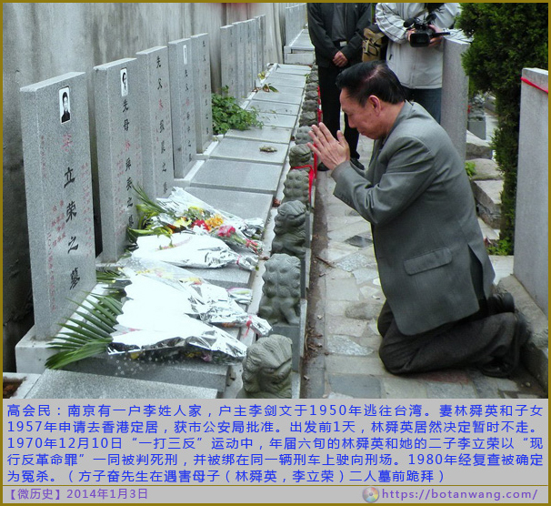

老杨转发系列（2）
南京恐怖故事
我亲历的张稼山、李立荣反革命集团案
by 方子奋
|
老杨评述：小标题是我加编的。深夜读罢，我只有一个感觉：这简直是南京恐怖故事，Nanjing horror story...尤其是看到母亲和儿子一同被判处死刑的那个场景，怎一个惨字了得！邓小平对文革事件的处理曾有“宜粗不宜细”的指示，今天我总算明白了为什么。太多事情根本不能细读，或不忍细读，那感觉并非人间。此文少儿不宜，建议14岁以下孩童在父母指导下阅读。 |

图片来源：www.botangwang.com
下面的叙述，以“事实”为根据，以真实性为铁定准则，我的行文以平铺直叙为主，毫不追求“文采”，我只是要忠实地还原出那段历史，其它别无计较。正因如此，文中所有主要当事人名，一概不予隐饰；所述内容及相关人事，在南京市公安局所存档案中均有据可查。
首先自报家门：方子奋，男，1941年5月24日出生，现年65岁。高级工程师职称，2001年退休在家。
“文革”期间，本人是南京市重大现行反革命集团“张稼山”案、“李立荣”案的要犯，同时又跟“张明才”案、“曹汉华”案（曹案由江苏无锡市“公检法军管会审理”）有重大牵连。上述四案的首犯张稼山、李立荣及其母林舜英、曹汉华等四人都是本人好友，在1970年“一打三反运动”中全部被处决。我本人则被南京市“公检法军管会”以“疯狂攻击伟大领袖毛主席、攻击无产阶级专政、攻击无产阶级文化大革命、攻击社会主义制度”的罪名判处有期徒刑十年。1979年9月经南京市中级人民法院复查后，确定本案及以上其余几案全属“冤假错”案予以彻底平反。本案平反判决的根据是“经查，所谓现行反革命活动，并无事实，应予否定。所谓攻击言论，主要是针对林彪四人帮的倒行逆施不满，不能构成犯罪。因此，原以反革命罪论处，显属错判。”我的两份判决书原件现存南京市中级人民法院，判决号分别是“南京市公检法军事管制委员会（70）军管刑字第87号”和“南京市中级人民法院79申（70）军管刑字第87号”。
由于当时本人涉及好几个“现反”大案，有关本人的档案材料，估计有二百万字之多；1979年复查时，办案人员捧出厚厚一摞档案，叠起来竟有热水瓶那么高。其中除本人的材料外，还包括大量“同案犯”的材料，由此可大致看出本人“案情”之复杂、“同案犯”之众多。在这些纷繁的人事中，每个“同案犯”就是一个
“现行反革命”，在今天看来无疑就是一个故事；要我全部写出这些故事，不用说是很困难的。我只能拣其中最突出、最典型、最具代表性，且又为我最了解的几个事件进行描述，余者将另文发表。
这里说的是当年南京市一个“反革命世家”的遭遇。
本文叙述的“反革命世家”，是当年南京市公检法军管会称之为“南京三大反革命世家”中位居榜首的一个“反革命”家庭。所谓“世家”，即意味着该家庭中至少有两代人以上从事某种职业，代代相传，子继父业，一脉相承。过去人们普遍羡慕的“革命世家”，无非指父母是“老革命”、子女是“新革命”。这里的“反革命世家”，同样是指前辈为“历史反革命”、子女为“现行反革命”。
1966年前，在南京白下区慧园里有一栋残败的小楼房，几十年以来门牌一直是6号。里面住着一户李姓人家。原户主李剑文已于1950年逃往台湾，其妻林舜英，在南京太平路（现太平南路）一家小纸盒厂当糊纸盒女工。长子李蔚荣，因“家庭成分”之故，无法在城内就业，18岁那年去了南京东流农场当农工。次子李立荣，在三山街刘长兴面馆紧邻的一家早餐店里做大饼、炸油条。次女和幼女，一个在锉刀厂当工人，一个在读中学。另外还有个大女儿，婚后随夫在武汉教书。一家人在林舜英的带领下，老老实实做人，基本不同外界接触，日子过得倒也平静。
已去台的李剑文，早年在第一次国共合作期间曾就读于苏联莫斯科大学，两年学业期满后，会同另外三个同窗好友一起回国。这四个青年留学生中，李剑文和另一同学出于亲戚关系（按：李剑文是李宗仁先生的远房堂兄弟）去了桂系部队，另二位同学则参加了共产党。李剑文到李宗仁麾下后，曾先后任安徽无为县县长、凤阳县县长、蚌埠市长、皖南专署专员等职务。任职期间，为官清廉，政声极好。由于同情共产党，而且利用职务帮过一些潜伏在国民党内的共产党朋友的忙，在抗日战争前夕国民党的“清党”运动中，被“中统”密捕关在合肥，并被列入处决名单。当时亏得一位朋友热心帮忙，将此消息迅疾告知定居南京的林舜英。林立即去南京棉鞋营李宗仁公馆面见李宗仁，恳请老上司搭救。李碍于同乡情面、又是宗族堂弟，遂派程恩远先生携李宗仁手谕星夜赶赴合肥，经过一番交涉，总算把李剑文保释出狱。抗战胜利后，李剑文一直在国民党安徽省省政府中任参事之类的闲职。1949年春，国民党军队全线溃败，在南京失守前夕，李剑文、林舜英夫妇携子女五人及保姆匆匆收拾细软举家南逃。一家人历经艰辛逃到广西境内时，谁知挥师南下的解放军部队已先于李家攻陷两广。眼看南逃无望，李剑文一家只得返程北上，决定先回南京再说。孰料祸不单行，快出广西时，一家人不慎走散，由保姆背着的老七（男孩）被当地农民强行抢走，从此音讯杳无。一家人好不容易到杭州会合后，李剑文考虑到回南京很有可能被人查认出来，为了保命，独自一人去了上海朋友处暂避；林舜英则带四个儿女回到南京慧园里6号旧居。最初一些日子的生活主要是靠过去的一点积蓄支撑，同时变卖一些首饰来维持。
1949年至1950年，李剑文一直躲在上海朋友家里，这段时间倒也安然无事。1950年全国“镇反”运动开展的前十天，李剑文突然接到在上海市军管会工作的一位朋友透露的重大消息：十天之后将在全国范围开展声势浩大的“镇压反革命分子”运动。这位朋友过去曾潜伏在国民党安徽省政府任秘书，与李剑文私交甚笃。那时李虽已知道他是中共特务，出于私交及对国民党大势已去的估计，也就睁眼闭眼认这个朋友交，并在暗中帮过一些忙。如今改朝换代后，这位朋友虽然在上海市军管会里身居要职，却也能念及旧情，关键时刻把这个绝密的消息捅给了李剑文，并嘱其立即设法出境，越快越好！李剑文得讯后，连夜赶到南京与妻儿匆匆作别，在军管会朋友的帮助下，设法经香港逃到了台湾，总算躲过一劫。但怎么也没想到的是，南京一别，不仅从此天各一方、生死茫茫两不相见，还成了与爱妻和次子的永诀！三十八年后的1989年，两岸关系有所松动，李剑文以九十高龄之躯重返大陆探亲。在慧园里那幢老楼里，我曾与老人两度促膝长谈，提及这段惊险往事时，李老先生为之唏嘘不已。这是后话。
李剑文之发妻林舜英，原籍广西，书香门第出身。女子师范学校毕业不久，即与李剑文结为夫妇，婚后一直相夫教子，持家主内。其为人秀外慧中，婉淑贤惠，堪称李剑文的贤内助。自丈夫去台后，仅靠一点为数不多的旧日积蓄维持全家生计。偶尔李剑文通过在港澳的亲戚朋友，汇寄一些钱款以助妻儿度日。
1957年春，我国政治环境处于一个短暂的相对宽松时期（若干年后我们才看出这是一种暴风雨来到之前的短暂平静）。林舜英同香港的朋友商定，准备举家去香港定居。经多次申请，南京市公安局批准并颁发了林与四个子女的港澳通行证。当时全家已将一切料理停当，连车票都已买好，只等整装出发了。谁知就在出发的前一天，林舜英忽然犹豫起来，经过再三考虑，居然决定暂时不走，以后再说。是舍不得把已经参军的大女儿一人留在大陆？是对那幢寓居多年旧楼的眷恋？还是一个传统旧女性对“外面的世界”有一种天生的恐惧感？现在我们再来作任何揣测都已毫无意义。当我们今天穿越时空隧道目睹着她第二天去退车票的背影时，只有两句古老的格言在我耳旁轰鸣：“一念之差定生死”！“世上没有后悔药”！十三年后，在她和爱子一同被绑赴刑场的途中，这两句话恐怕比即将面对的枪口更加令人撕心裂肺。
到了六十年代初，林舜英眼看着全家人天天挨饿、政治运动一个接着一个，深悔当年错过良机之余，决定再次申请全家去香港。然而时过境迁，今非昔比，这次公安部门一口回绝了她的要求。任何离开“社会主义天堂”到“资本主义地狱”去的企图，现在都一律视为“对社会主义制度不满”的背叛行为。对这个法力无边的“国家”的行事逻辑，作为一个弱女子的她，除了后悔也只能还是后悔。
后来为了生计，她进了南京太平路一家纸盒厂当糊纸盒女工，一家人凑合着打发日子。
在林舜英的五个子女中，最聪明、最有个性的是排行老五的李立荣。李立荣自幼聪颖过人，悟性极高。初中毕业后，为减轻母亲负担，他放弃了升学机会，进大饼店当了学徒。由于大饼店卖的是“早点”，每天上午九点后就算下班了。这就给平时既爱读书、又酷好西方古典音乐和电影艺术的李立荣有了充分的“业余时间”，去他爱好的“兴趣王国”里遨游。大量的读书使他迅速积累了丰富的知识，同时也大大开拓了自已的视野。“文革”前，同他接触过的大学老师和外国留学生，在谈及西方文学、音乐、电影时，无不为这个仅有初中学历的青年的博学多识所折服。他那不俗的谈吐和每每流露出来的真知灼见，使每个初次认识他的人都会留下极其深刻的印象。由于共同的文学、艺术爱好，李立荣结识了一些情趣相投的热血青年，自1965年开始学习小提琴后，则又多了一批“琴友”。一干朋友经常在一起聚会，纵谈文学、艺术之余，不免涉及西方的民主政治、人权保障，对中国的现状流露出一定程度的不满，尤其对当局的高压政治和愚民政策特别反感。在这些人中，李立荣算是最锋芒毕露的一个。
1965年，一位和李立荣一道长大并过从甚密的朋友，因为同外国留学生交往密切，犯了当局的大忌，被以“莫须有”的罪名判刑五年。这其中李立荣受到了一点牵连，当时南京市公安局X处一位警官曾找李谈过两次话，在讯问了与这位朋友的关系后，还对他进行了一番“训诫”，并称以后还会找他。不久后文革开始，这位警官从此再也没有露过面。事过之后，李立荣还是做他的大饼、拉他的琴，业余时间继续和朋友们沉浸在贝多芬、莫扎特、勃拉姆斯、柴科夫斯基的美妙音乐里。我们国家在当时曾上映过相当数量苏联、东欧以及意大利、西班牙、法国、英国、西德、日本等资本主义国家的优秀影片，其中有不少是世界电影史上的经典作品。李立荣对这些电影是一场不拉，而对国产影片则从来不屑一顾——后来，这也成了他思想之所以反动的根源之一。
日子就这样一天天过，在那种无奈的表面平静下，他满以为今后的日子也只能这样过下去了。他不可能知道，一场铺天盖地的血腥风暴已经在天边隐现，巨大的危险正一步步逼近，逼向他，逼向他的家庭，逼向他的朋友们。他，他的家人亲友，和全国所有不甘对暴君的统治俯首帖耳的正直善良的人们一样，在即将到来的大灾大难中都将在劫难逃，无一幸免。
1966年，“文革”的腥风血雨迅速席卷全国。到了八、九月份全国“红卫兵”抄家成风，李家作为“反动派官僚家庭”自然免不了被“红卫兵小将”们惠顾。好在家中除了几张床和一张破沙发外已别无长物。除了沙发被小将用刀划出几道大口子（检查是否内藏电台之类敌特用具），基本上没有什么损失。
在其后的夺权、派性武斗中，李家自然不可能参加。造反派们忙于争权夺利、互相残杀，这倒使李家这样的“反动家庭”由于置身事外而暂时平安无事。这种日子持续了一年多。在此期间，南京“革命大联委”（由双方造反派及部分军人组成的临时权力机构）组织了“前线歌舞团”、海军军乐队部分成员，以及南京各企业的音乐爱好者，成立了一个革命样板戏芭蕾舞《白毛女》剧组，李立荣也报名参加，成了一名小提琴手。这个剧组在67、68年间一度很有名气，除在本市演出外，还多次应邀赴武汉等外地巡回演出。若干年后在香港颇有名气的小提琴家陶葆贞女士，那时就在剧组乐队担任小提琴首席。
剧组总共活动了一年左右。这一年，应该是李立荣短暂一生中最快乐的岁月。不仅每天可与心爱的音乐作伴，更有使青春迸发神奇光芒的追求——从天而降的爱情！
在剧组排练、演出过程中，前线歌舞团一位歌唱女演员T进入了李立荣的生命。从相识、相好到热恋急剧升温，两人的关系很快达到难分难舍、如胶似漆的地步。在李立荣的邀约下，我曾见过一次T，这姑娘不仅貌美、清纯，一颦一笑楚楚动人，居然还是中共正式党员。那天我们在中山陵的水榭亭待了将近一亇下午，告别时，李立荣靠在她身旁，左臂搂住她的肩、右手提着琴，一脸灿烂的笑容。当我离开好远再度囬头看他们时，这对相偎的恋人在夕阳的余辉中依然在向我挥手，那幅动人的画面几十年来一直“定格”在我的脑海里，直到今天仍历历在目。动笔写此文前不久，我拜访了李立荣的兄长李蔚荣君，以落实一些细节。在提及李立荣当年的恋爱时，我们都禁不住老泪纵横、哽咽难言。
时间到了1968年春夏之交。经过一年多狗咬狗的派性争斗，造反派们谁也没捞到什么好处——各地建立起“革命委员会”并实行了军管。前面放的差不多了，现在该收拾收拾了，于是伟大领袖及时地作了最高指示，全国开展了“清理阶级队伍”斗争。单从运动的冠名看，也许可以理解为，运动的目标只是将“阶级异己分子”清除出“无产阶级队伍”，纯粹是这个队伍自己的“内部事务”，与他人无关。但在这个国家的政治词汇里，又何曾有过“名至实归”的情况？这次“清理阶级队伍”的真正内涵，体现在现实中就是：非我族类即“异己分子”，异己分子即“阶级敌人”，对阶级敌人，则必须从“无产阶级”的人世间“清理”出去——对他们实行“无产阶级专政”，或杀、或关、或管、或判！
这时，李家的厄运正式开始了。
由于本人案情与李氏母子的案情紧密交织在一起，在叙述李家下面的不幸遭遇之前，在此必须先将我个人的来龙去脉扼要地交代一下。
我于抗战期间（1941年）出生在南京一个工人家庭，父亲抗战爆发前在青岛轮船上当水手，曾经参加过有名的“二七”大罢工，还是长辛店罢工总指挥部纠察队成员。“解放”后却一直找不到正式工作，偶尔做点零碎生意糊口度日。1953年我母亲进了南京织带厂干纺织工，每月工资17元。同年我父亲跌伤右腿后，全家四口人就靠母亲的微薄工资度日。1954年小妹妹出生，母亲没有奶水，小妹妹终日嗷嗷待哺。至于奶粉奶糕，那是绝不敢奢想的奢侈品。当时我们全家人的主食是40%苞芦面（即玉米面）掺以60%的豆腐渣做的饼子，父亲只能将苞芦豆渣饼用口嚼碎后喂我小妹妹。但我这个才四个多月大的小妹妹可能从娘胎里就带来了资产阶级追求物质享受的劣根性，居然拒绝这种我们全家赖以活命的食物！1954年底一个滴水成冰的寒冬夜晚，我这位出生后一直挨饿的小妹妹悄无声息地死去。母亲搂着她那纤小的尸体哭了一整夜。次日早晨，一位邻居借了五角钱给我们，父亲用此款托人买了一只草蒲包装进我的小妹妹送到了乱坟岗。
小妹妹死时我十四岁，刚上初中二年级。可能是穷人的孩子懂事早的原因吧，从我的小妹妹饿死的那一刻起，我再不相信什么“解放”“翻身”“人民救星”之类的鬼话，并且无论这种鬼话如何与时俱进、花样翻新！
1955年，大概是“家庭出身好”的缘故，我被保送到武汉湖北机械专科学校读书（军工院校），学的是水雷专业。1957年“反右”斗争开始，我们校长缪忍安（老先生目前尚健在，已届九十高龄）在全校动员大会上热情号召全体师生积极投入“大鸣大放大字报”，踊跃向党向领导向政府提意见，并再三保证不管提什么意见、不管言辞多么激烈，绝对不会秋后算帐。我至今记得当时他一段精彩讲话：“……现在，有一部分同志不相信党的政策，心存顾虑怕秋后算帐，不敢写大字报，不提意见。我们去动员他向党提意见，他却说共产党实在英明伟大，想不出还有什么意见可提。我认为这部分同志讲的不是实话。连我们共产党自己对自己都有意见，你们就真的一点意见没有？这分明是对党不同心不同德嘛……”（现在看来，老先生当年说的可能也确实是真心话）。经过这些大大小小的动员会，全校很快掀起了大鸣大放高潮，一时间到处张贴着琳琅满目的大字报。那时我尽管对共产党没什么好感，但毕竟只是一个涉世尚浅的十七岁毛头少年，也提不出多少意见，只是随波逐流地写了十几张大字报。当时学校还对每个人写大字报的数量有指标规定，为了完成任务凑足张数，我的字往往要比别人大出一号。就这么热闹了一个星期，突然间风向大变！凡是意见提得多、问题提得尖锐的师生员工，无一例外倒了霉。其中七八个“与党同心同德”最“积极”者被戴上了“右派”帽子。而那位在会上大声疾呼要与党“同心同德”的校长先生，却在十余天后就把“决不秋后算帐”的话一口吞了回去，换上一副大义凛然面孔，在全校师生员工大会上义正词严地痛斥起“右派分子向党进攻”的罪行来。
说实话，我毫无在此指摘我的老校长之意。在我的印象里，他是一位不错的领导，平时治校行政、为人处世都中规中矩。如今关于那场“阳谋”出台的前后经过已为世人尽知；设身处地想一下，当时敢于违命抗旨者又能有几人？我们那位老校长倘若不那样做，他的上司，他上司的上司，怎么能放过他？半个世纪后的今天，当我们回顾那些往事时，除了不堪回首的酸楚外，他恐怕还要多吞下一口苦水，如此而已。
在运动前期由于我写的十几张大字报都是些人云亦云无关痛痒的废话，我倒也安然无事。谁知临近运动尾声时，在一次班级会上我的发言却撞在了枪口上，从而在很大程度上改变了我后来的命运。在那次班级会议上，有同学借“暴露”自已错误思想为名提出，当初缪校长在鸣放动员大会上信誓旦旦地保证过不会秋后算帐，现在还没有到秋后，怎么这么快就把提意见的打成右派了？这是不是秋后算帐，这算不算领导讲话不算数？今天回想起来，那句“性格即命运”真是至理名言啊！我这人自少年时代起就有好出风头、喜欢逞能的恶癖，自以为读了几本书，一有合适场合，总不失时机地卖弄一番胸中的半瓶子醋。当时我不等那位同学把思想“暴露”
完，不假思索地就接过那位同学的话茬说：“怎么不算？这是典型的出尔反尔，这是事先设计好的一个大骗局，就等人们来上当！”接下来我又引经据典，从《东周列国》、《孙子兵法》谈到《楚汉相争》、《三国演义》，列举了“兵不厌诈”、“引蛇出洞”、“诱敌深入”等古今战术战例，滔滔不绝眉飞色舞，以至后半场的班级讨论会几乎被我一人全包了。我倒是只顾卖弄，图了一时咀巴痛快，谁知这番讲话很快被整理出来送到了党委办公室。党委反右办公室审查后，一致认为“这是一起严重的公然为右派分子鸣冤叫屈的政治事件，一定要严肃处理，否则将影响我校反右斗争的深入”云云。后来，多亏班上团支书、领导小组组长等几位老大哥老大姐（注：我在班上年龄最小，俗称“老巴子”，外号“倚小卖小”；当时我17岁，按现在的法律用语，还属于“限制民事责任能力”的年龄）暗中庇护，在开了几次对我的批判会后，小骂大帮忙地做了一个结论，大意是“家庭出身好，不是立场问题”、“问题虽很严重，态度还算端正”、“胡说八道，有口无心”、“闻屁不辨香臭，开口不知轻重”等等。最后党委以“该生一贯表现不好，在反右斗争中公然为右派分子鸣冤叫屈，情节严重、性质恶劣。本应严处，姑念年龄尚轻，现给予教育帮助机会”为由，给了我一个“最后警告”处分。从此这口“黑锅”在我的档案里“背”了二十二年之久，直到1979年才随着后来的“现行反革命罪”平反而同时卸下；而它对我人生轨迹的影响却很快就见之分晓。
有了1954年小妹妹活活饿死的切肤之痛，现在由于议论“引蛇出洞”又外加一口“黑锅”压背，十七岁那年我感到自己真正“长大成人”了。打那以后我不但不相信任何“鬼话”，还养成了一亇很坏的习惯——对所有的官方文件和国内报刊，我总是倒过来看！而且这个坏习惯不幸延续至今，诚如伟大领袖批判坏人时说的
“改也难”。
就这样，我背着黑锅在1960年从学校毕了业。随即被分配到杭州船舶专科学校，名义职务是机械制图教师，但没有教过一天书。原因是学校领导在我档案中发现了我有“右派言论”这个特长，虽无“右派分子”职称，好歹有个“最后警告”头衔（相当于初级职称？），为了按“才”录用，于是把我和那些有“正式职称”的右派教授、讲师们“同类项合并”，分在一起从事基建劳动。我当时倒没怎么计较，甚至还天真地以为这样倒相当安全——同是天涯沦落人，都到这地步了，总该有个相互同情照顾，或者说至少会“同病相怜”吧？但很快我就发现自己大错特错了。和我成天一起劳动的“右派”先生们，不但在繁重的扒石子、扛水泥、抬黄沙之类的劳动中卖力干活、积极表现，在政治学习发言时更是争先恐后、唯恐有怠，除了深刻批判自己，还不遗余力相互揭批，有时“火力”甚至比当年革命群众批判他们有过之而无不及！最后，我居然成了他们的靶子和邀功对象。平时我信口开河的日常讲话，经他们“上纲上线”，将其整理成材料密报了党委，惊动了党委书记魏某。这位魏书记过去一直在部队当政委，政治嗅覚敏锐，“阶级斗争”经验丰富。当时学校创立不久，这位书记大人主政以来尚无尺寸之功，急于在政治上有所斩获。在看了我的右派同事们的告密材料后，顿时引起了他极大兴趣。正愁暂时没有合适的“靶子”，现在有了现成的“猎物”，岂能轻易错过？当即召开专门会议进行动员、安排。事后一位当时在其身边工作的朋友告诉我，魏书记曾在党委会上“启发”大家：
“右派分子已经够反动了，现在连他们都认为这个姓方的思想反动，可见姓方的反动到什么程度了！”（注：一亇人如被好人说坏，还不至于真坏，若被坏人说坏，则不坏也坏。这真是比黑格尔还黑格尔的辩证法）经过如此严密的逻辑推导，他亲自部署我所在的系对我进行了系统揭发批判。在对我的多次批判会上，右派同事们那种大义凛然、嫉恶如仇的批判发言，真使我目瞪口呆，天哪，这哪是右派啊，分明是地地道道纯种的无产阶级左派啊！我还真得谢谢他们，得以从他们揭发我的
“反动言论”里，一条一条看清了这些告密者的丑恶嘴脸。三十多年后，当我从张贤亮先生的名作《我的菩提树》中读到“和这种知识分子在一起，比夜晚在深山中和狼同行还要危险”一语时，登时不禁拍案叫绝，这亇张贤亮，简直他妈的把话说绝透了！
约一个月后，浙江省公安厅突然来了两个人找我谈话。第一次来时，他们从公文包里掏出一叠材料，边看边问，似乎在核实我的一些言论。一周后，这二位又来了，这次开始没怎么提问题，只是东拉西扯聊起我平时的劳动和生活。后来一位有络腮胡的大个子忽然问我：“你同你们领导是不是有什么矛盾？”我说没有啊，我不过是刚分配来的一个青年教师，平时跟书记、校长连话都没有说过，哪来的矛盾？另一位则自言自语起来：“这就怪了，”他扬了扬手中的材料说：“我们认真看了你的材料，也同你直接进行了接触。我们觉得你有些言论是有点问题，不过还不属于敌我矛盾。你们学校两次坚持要送你去劳动教养，也不知是什么意思？”最后他挺诚恳地说：“好好安心工作吧！批评教育也不是坏事，以后说话注意点就行了。你是知识分子，不用我们多说你也会明白。”就在两位已经起身出门时，络腮胡子忽然又踅进屋内低声对我说：“在可能情况下，你最好还是调一个工作单位吧！”
这两位来后，我才知道学校已将我的“反动言论”材料报到了浙江省公安厅（注：我校的内保直属省公安厅），并两次要求送我去劳动教养。而公安厅对我的问题倒挺慎重，经过反复审核最终未予批准。
到了八十年代后，不少在前半生吃尽政治运动苦头又经过牢狱之灾的朋友在“忆苦”时，往往以“洪洞县里无好人”对共产党干部“一言以蔽之”，其实这种看法是片面的。当年，那两位公安厅人如果在学校送我劳动教养的报告上大笔一挥，再盖个章，不是一件轻而易举的事吗？尤其那位络腮胡大个子的出门踅回，更属多此一举；凡此种种，包括后来我在劳改期间同劳改队干部的接触，即使作为被专政的“阶级敌人”，我也还能在专政者的身上多少体味到一些残存的人性。
折腾了一个月左右，对我的揭发批判总算告一段落。又隔了十几天，魏书记单独找我谈话，说原来要送你去劳动教养的，但考虑到你出身好、年纪轻，组织上决定还是要帮助、挽救你，希望今后好好改造世界观，努力做好工作，云云。尽管我心里透亮，表面上还是装出一副感恩不尽、痛心忏悔的样子，表示今后一定听书记话，好好改造自己的世界观
。
事情结束后，络腮胡子那句临别赠言一直在我脑海里回旋。这个学校环境实在太险恶，确实不能再待下去了，我决定辞职回南京。当机立断，主意打定后的第二天，我就把辞职报告送到人事处。三天后，学校下文批准我自动辞职。临走的前一天晚上，我狠狠的揍了一个郑姓老右派一顿。这位郑右兄原系XX机械学院的副教授，年龄已近“知天命”。在反右斗争中，大概也是口没遮拦地向领导提了一通意见，最后成了右派。有次我和他一同如厕，蹲着无聊，东拉西扯说了一些闲话，其中扯到过到处饿死人的事。及至开我批判会时，他为了好好表现表现，竟添油加醋“揭发批判”我，说我“恶毒攻击三面红旗”、“污蔑社会主义制度”，说我“造谣到处饿死人”。当时厕内只有我们两人，而他的“反动言论”比我还多；现在我倒霉了，他却落井下石，声色俱厉、唾沫四溅地把所有脏水往我身上泼！这口气我此时不出更待何时？当他鼻青眼肿“状告”到保卫处后，保卫处大概是认为这属于坏人打坏人活该，结果不了了之。
这位郑兄倘若还健在（当届九十高龄了），我还是愿意当面向他道个歉。无论如何，“君子动口不动手”，且从法律角度我也侵犯人权了。在我记忆中，我从未主动打过人，这唯一的一次，打的居然是一个年已半百的老右派，一想到此事，心中就很不是滋味。再想想连吴晗这样的正人君子，在“反右”中居然也出卖过朋友，严酷的政治环境能把人的心灵扭曲到什么地步，确实超乎常人的想象！
1961年秋，我自动辞职回到南京。作为“漏划右派”，我跑遍了有关部门，找不到任何工作。1962年，为了解决吃饭问题，我不得不以“待业青年”身份随同一批中学毕业生到南京东流农场当农业工人（主要从事果木种植）。工资不是很高——16元[资格龙（键盘输入者）插话：我的“劳教工资”还比你多五毛呢！：）]。两年之后，据说是落实知识分子政策，一下子把我的工资调高到每月19元。如果把当年我们的社会结构分成十八层的话，我的社会地位大约相当于十七层半。尽管到了这个层面，档案袋里那口“黑锅”还是如影随形地忠实陪伴着我。1962到1966年期间，由于我的特殊政治身份，一直蒙受农场领导的特殊关照，在1963年还荣获一顶“监督劳动”桂冠；此间的许多故事就暂时不表了。
1966年“文革”开始后，领导们无一例外成了“走资派”。农场同全国其他单位一样，呈现出一片泛自由化状态。领导们成为“走资派”后，手中的‘阶级斗争权杖’，一夜之间全被伟大领袖收缴了，权没有了，架子随着也小了许多，见面时居然也会恭维我几句，这倒着实很让我“受宠若惊”了一阵子。不过真正舒心的还是，生产无人过问，上不上班根本无人管，这使我这个天生好逸恶劳的人有了许多看书、拉琴、练字的时间，日子过得十分逍遥。（从1967到1968年期间，我还曾积极投身过当时风靡全国的“三忠于”活动中——应邀到各处绘制伟大领袖的红宝像［油画］。不过动机不太纯，主要是贪恋邀请单位的饭菜香烟招待，每到一处明明十天可完工，我往往要拖一倍以上时间。那一年多里，我和我的小助手栗X两人吃的红光满面。后来在我被抓后，曾有不少革命群众揭发我，说我在画伟大领袖红宝像时，从来没有一气画完，今天画个头，明天画身子，故意让伟大领袖身首异处，用意恶毒至极。令我诧异的是，这条极为严重的罪状最后居然没写进判决书，至今不解何故？）
就在那年秋天，我认识了李立荣。
是年农场创建阀门厂，负责技术工作的是三位下放干部。其中两名讲师、一名八级技师，理论、技术均属一流。经他们推荐，我被调入阀门厂做他们的助手。进厂后我认识了干车工的李蔚荣，然后通过他认识了他的弟弟李立荣。认识李立荣，我的人生出现了重大转折。
初次在李家见到李立荣并与之交谈，我就被他不凡的气质所征服。他关于政治、文学、艺术的独到见解，使我既佩服又吃惊；而他同时表露出的真诚和直率，更是令我感动不已。我在农场埋了五年，每天与黄土为伴，同阶级斗争打交道，现在陡然在面前出现一个倍感亲切的知音，原来那颗冷漠孤寂的心顿时充满了温暖。当我们谈到凌晨一点握手告别时，我哭了。
相见恨晚之余，我们很快成了莫逆之交。从认识他开始到1968年夏的两年多时间里，我们共同经历了欢乐和忧患。在他失去自由前的那段日子，他最要好、最知己、最信任的朋友就是我。我对他的情谊，绝不亚于我家中唯一的同胞兄弟。尽管后来发生了那么可怕的事，却丝毫未能动摇我们之间的信任和关心。在我出事之后，我根据办案人员的口气和种种迹象证实，他把我们之间只有两个人才知道的一些事一直带到了刑场。我很清楚，只要他在被捕后稍微供出这些秘密的一部分，我恐怕活不到今天。
有关我本人的介绍，暂且打住。
1968年春末夏初，“清理阶级队伍”运动开展后，李立荣从他单位朋友处打探到一个消息：大饼店的上级革委会正在整他的材料，准备办他的个人专题“学习班”。1968年6月1日，我和他一同到建邺路小学，观看一位朋友W的批斗会。在会上有人揭发W和李立荣关系密切，要他交代和李立荣谈过哪些反动言论。W
因为态度不好，会后即被关进南京建邺公安分局看守所。在回来的路上，李立荣说他可能会有大麻烦了，我也同样表示了忧虑。
在之后的一段日子里，我几乎天天和他在一起，帮他回忆同哪些人说过什么话，有无涉及政治、尤其是“矛头直指”的言论；同时商量万一我们各自都被隔离审查，如何应付办案人员的讯问——也就是“订立攻守同盟”。
1968年6月20日，李立荣得到可靠消息，明天他将被隔离审查。那天我和他单独待在一起直到次日凌晨四点。我们对即将面对的一切做了各种估计，并且作了最坏的打算。根据我们的判断，他和我，以及我们一班朋友之间充其量就是在一起谈论时政，对红卫兵“造反”、破“四旧”、抄家打砸抢等行为进行抨击议论，还有过一些对当局几个最高领导人的不恭之辞。但是按照当时的情况，如果落实到头上，判个几年徒刑恐怕难免——不过，我们谁也没有想到就凭这些言论会有掉脑袋的事。（是我们太年轻、太单纯？还是这个民族太年老、太复杂？也许这是一个永远的谜。）那天临别前他一再嘱咐我小心、保重，并希望我帮助照顾他的母亲和兄妹。天亮前他送我下楼，在楼梯口我们拥抱后挥泪告别。
第二天上午九点，李立荣被隔离审查，并于下午被关进设在太平路杨公井清真寺内的白下区“文攻武卫指挥部”。此机构名义上是“群众专政”，实为公检法军管会的“编外看守所”，关押对象大致有以下几类：不安分守己的“四类分子”；造反派中的“坏头头”；有不满言论的“思想反动”者；投机倒把分子（即后来的“个体户”）；“乱搞男女关系”的；拒不下放插队的以及一些小偷小摸者。而“看守”则由各工矿企业选出的一些“思想觉悟高、家庭出身好”的人充当，每批干半个月，再轮换着干——这有点类似1793年法国大革命雅各宾时期的“民众法庭”。李立荣进去后一个月不到的时间里倒没有受什么罪，就是回单位开过两次批斗会，一般性的低低头、弯弯腰而已。当时我通过“内线”（我在“看守”中的熟人）可不断得知他在里面的情况。
8月上旬的一天，“内线”传来一条消息：第二天下午在白下路海员学校大礼堂召开全白下区“批斗现行反革命分子李立荣大会”。这天下午我早早去了会场。会上有七八个人发言，主要是揭发李立荣的“三反”（反党、反社会主义、反伟大领袖）言论，除点了“文革”前已被判刑五年的Z的名外，只是笼统地说“李立荣和许多现行反革命分子臭气相投，来往密切，在一道恶毒攻击伟大领袖、攻击文化大革命”，但并未提及具体人名。在批判分析、无限上纲的同时，对肉体也采取了激烈的行动：自李立荣被押上台起，就有八九个彪形大汉在旁伺候，自始至终人被架成“喷气式飞机”，上半身与地面成90°角。身后还有专人揪住头发，每当责令回答问题时就把头拉成仰角。在他抬头的瞬间，我看见他那张苍白的脸，嘴紧紧抿着，两眼在喷射怒焰。任凭呵斥怒吼就是不开口。他的倔强招致数番拳脚，最后一次头被拉起来时，鼻子里的血正一滴一滴往下淌。台下的人不停地疯狂叫喊：“顽固到底死路一条！”“打倒反革命分子李立荣！”“强烈要求镇压反革命分子李立荣！”“无产阶级专政万岁！”口号声震耳欲聋。最后有人声嘶力竭地高喊“大家说，对李立荣这种顽抗到底的反革命分子怎么办？”话音刚落，会场上立即爆发出一片“杀！”“杀！”“杀！”的声浪。三十七年后的今天，当我手中这支颤抖的笔写到这里时，耳边又响起那震耳欲聋的喊声：杀！杀！杀！杀！杀！杀！
下午四点半钟，批斗大会结束。那几个彪形大汉把李立荣继续架成“喷气式”，颈上用铁丝吊着一块二尺多长的大木牌，上书“现行反革命分子李立荣”，由海校出发经白下路走向大行宫清真寺“文攻武卫指挥部”。那是一个酷热的下午，毒辣的太阳把沥青路面都晒化了。被架成“喷气式”的李立荣艰难的一步步挪动着双脚，头上的汗不住往下滴，颈上挂的木头牌子时时擦着地面。从海校到清真寺，我一直推着自行车，夹在随行的围观人群里伴随着他。途中有几次他趁揪他头发的人换手的间隙略微抬头时看见了我，我乘机做出中指架在食指上并紧贴胸口的手势（源自一部苏联影片，表示忠诚），他看见了——从他嘴角漾起的一丝不易觉察的微笑上我知道。从海校到清真寺最多不过一公里的路程，却走了将近一个小时。进清真寺大门时押送人松开手，他直起了腰。这时他猛然回头，正好跟五米开外的我四目相对。他眨了眨眼，露出了笑容。紧接着大门在他身后掩上了，这是我在今生今世最后一次见到他，从此，我与他生死两隔！
他把在人世间最后一个笑容留给了我，也将这个笑容永远镌刻在我心中。去年（2005）8月的一天，途经白下路海校门口时，车窗外的阳光陡然间触动了我的下意识，我叫立即停车，让司机丢下我自己开走。我从海校沿当年李立荣走过的路线一直步行到清真寺。文攻武卫指挥部早就灰飞烟灭了，那座清真寺又恢复了它的原来用途，一些虔诚的穆斯林正在进进出出。没有人记得当年的一幕了。这同样的炎夏烈日，同样的天空和街道，三十七年前，这里曾经见证过一个平凡善良的青年人，带着他做一个最普通的“人”的愿望，被人架着一步一步走向了自己的不归之路。
就在批斗大会当晚，李立荣被转押至白下区公安局看守所。按当时说法这叫“升级”。
自从李立荣被隔离后，他母亲林舜英终日思念儿子，也不知儿子究竟犯了什么事？李立荣“升级”后，她更是寝食难安，几乎终日以泪洗面。我一般两三天去她家一次，既是践约照顾安慰李立荣的母亲，同时也很想知道他本人的消息。就这样几个月过去，既无什么动静，我们也打听不到任何消息。
日子很快到了1969年春节，就在这年的春节期间，出现了新情况。
在节前的腊月二十八，一个自称姓陈的人晚上悄然去了李家。见到林舜英和李立荣的哥哥李蔚荣后，陈某称其前段时间一直和李立荣关在一个号子里，而且睡在李立荣紧侧，两人一见如故，无话不谈。就在他临释放前夕，李立荣特意托他带口信回来，说他在里面一切都好，望母亲和兄妹不要担心。他最不放心的是几个好朋友在外面有没有麻烦。另外陈某还重点表示，按李立荣嘱托，他必须要同老方和曹汉华见一次面，有些事要当面谈谈。
次日上午我去李家时，我们三人一起分析了一下。林舜英的意思是他儿子又没犯什么大法，这个姓陈的鬼鬼祟祟，形迹颇为可疑，会不会是公安局派来套我们话的？还是不要没事找事，叫我和曹汉华别去见他为好。李蔚荣也认为不必去接触这个人，免得节外生枝。
上面提到了曹汉华，现在要简单介绍一下他的情况了。
我认识曹汉华是在1967年。在我之前李立荣和他已是知已好友。他一直在无锡市第二制药厂当工人。曹汉华喜欢弹吉他，爱好古典音乐，读过很多书。为人极其敦厚善良，且仗义疏财非常讲交情。1967年经李立荣介绍和我认识，很快成为至交。共同的兴趣、爱好，共同的政治、文化见解，我一直把曹汉华视为我的知音。尽管我认识他只有一年多时间，但在我这一生中，他在我心里始终占有非常重要的位置。1970年，就在我被捕判刑不久，曹汉华被无锡市公检法军管会以
“现行反革命”罪名残酷杀害。1970年冬我被南京第十一劳改队押往无锡建华监狱集训，在那里认识了一个吕姓刑事犯。他在看守所时一直和曹汉华关在一起，并且在同一个“公判大会”上宣判。多亏这位吕姓难友，让我多少了解到了一点曹汉华的最后情况。曹在被捕后，面对种种酷刑，始终没有开过一次口，按现在的法律用语是‘零口供’。恼羞成怒的审讯人员使尽了招数，最后竟用铁棍撬掉了他的全部牙齿。即便如此，也未能使他屈服。在“公判大会”上宣布判他死刑后，他强行挣扎着猛的把头前倾迅即后仰，使得身后抽住勒在犯人颈子上绳圈尾巴（注：这是具有二十世纪中国特色的一种对付死刑犯人的特殊手段。每个死刑犯人在执行前，颈子上都被套结一个Q形绳圈，松紧以死刑犯人勉强可以呼吸为度。一旦发现犯人临刑前要呼口号，身后的警察立即抽紧绳圈尾巴以勒住犯人喉咙使其发不出声来。这个方法比起张志新临刑前的割断喉管，显然是一个重大的人道主义改革，正因如此，故一直沿用至今）的警察猝不及防从而让曹汉华松了一口气，就在这个瞬间，曹汉华用这最后的一口气喷发出了他留在这个世界上的最后声音：“打倒XXX！”“打倒XXX！”
1969年春节大年初一，曹汉华从无锡回南京。见面时我把李立荣从看守所托人带信，以及来人一定要同我们见面的事告诉了他。同我一样，他也认为应该见见那个姓陈的。
年初三，按照事先约定，我、曹汉华一道与陈某在朱雀路（现太平南路）和健康路交界处一座银行大楼旁见了面。这亇姓陈的大约四十七八岁，瘦瘦的，有两颗显眼的金牙，让人老远一看就能认出。
那是一个大雪纷飞的下午，在？漫的雪幕中，街道上几乎看不到行人。我们三人撑着伞，踏着厚厚的雪沿朱雀路（如今的太平南路）边走边谈。
一番寒暄过后，陈某神情诡秘地告诉我们：“立荣在里面一切都好。从目前情况看，上面并没掌握什么具体的材料，你二位不必担心。”
“不过，”他放低声音接着说，“他最不放心的是你们二位。他最看重同你们二位的生死感情，同时，”他的声音更低了，“他之所以不放心，主要是怕你二位因他的被捕而可能命令组织暂停行动。他再三要我转达你们，不管出什么事，组织活动必须照常进行。”
听他这番不着边际的话后，我告诉他：“我们跟李立荣不过是好朋友，大家都爱好音乐和文学，平时最多在一起发发牢骚。我们从来就没有什么组织，而且连想都没有想过。”
他显然对我的话很不满。
“既然二位不愿把真情告诉我，”他停下了脚步，“我当然也很理解。干我们这行的，特别是身在组织的，必须保持高度警惕，任何麻痹大意都会有灾难性后果。既然二位不愿深谈，那就到这里吧！反正我已经把话带到了。”
见他似乎动了气，我只得反复向他介绍我们和李立荣认识、交往的经过，并再三告诉他我们只是好朋友，我们从来没打算搞什么组织，更没有什么“行动”。
“既然二位话说到这份上，我也就不为难你们了。看来，我们的上面不是同一条线的。”
曹汉华和我对看了一眼，然后对陈某说：“谢谢你老陈，你冒着风险带信来，我们真的很感谢你。不过你提到的组织，我们确实没有，你若不信，我可以赌咒。”
大概估计到谈不出什么名堂来了，他也就没再提什么“组织”的事。但似乎还不死心，又“不经意”地提到我和曹汉华的家庭、工作单位情况，连一些细节都很准确。显然，他对我们的情况非常了解。对此我和曹汉华都有些惊讶。
这次见面约持续了半小时，后来雪越下越大，走到白下路口时我们分手了。告别时陈某很郑重地对我们说：“再见吧。根据规矩，希望二位不要跟踪我。一旦有什么情况，我会及时通知你们。”
望着他在大雪中很快消失的背影，我和曹汉华有些茫然。这个陈某，究竟是什么人呢？
根据他的谈话，显然对李立荣、对我和曹汉华都相当了解。他居然连曹汉华女朋友的小名都报得出，还知道我弟弟的乳名。这些都不是一般朋友能知道的。他一定和李立荣在一起关过，而且李立荣对他非常信任。但是，这个姓陈的一再追问的“组织”又是怎么回事呢？我们从来没成立过什么组织，李立荣当然不可能跟他提起这个所谓的“组织”；那为什么他又反复提出这个问题呢？难道陈某是个有幻想症的精神病患者（文革期间精神病患者被抓进去的不在少数）？这不对。首先，如果他和李立荣关在一个号子，李立荣必然很了解他，他怎么会托一个精神病人带信呢？再者，从我们跟他这次接触来看，陈某思路清晰、语言表达准确，怎么看也不像有精神病。
可能的解释只能是，公检法军管会并没有从李立荣嘴里得到想要的东西，而且他们估计很难撬开李立荣的咀巴，情急无奈之下，特地精心设计了一个圈套。于是安排了一个“卧底”在他身边，通过李立荣之口，在摸清了我们一些生活细节后，取得我们信任，最终把我们这几条“大鱼”钓上钩。如果我们真有什么“组织”，倒真如这位“卧底”所言，稍一“麻痹大意”就会有“灾难性后果”；但，如果这“组织”二字本来就是“莫须有”，下一步他们又将如何呢？
我和曹汉华分析到这里，不禁倒抽了一口冷气。看来，公检法对我们这些人已经不是一般的“关心”了，一场巨大的危险正在逼近我们！不过我们还是有点迷惑不解：几个年轻人平时在一起，除了谈谈文学、艺术，最多不过一时兴起地发泄一下对现实的不满，可从来没有真的想要同当局为敌啊！对我们这些人，值得大动干戈吗？
那时我们怎么也没有想到，人的“思想”和“言论”，人的独立思考和信息交流，居然会让一个武装到牙齿的“国家”感到如此恐惧！！
初三当晚，我把当天下午去见陈某的情况告诉了林舜英和李蔚荣。林舜英觉得儿子既然没有做过什么反政府的事，你们又都是些很正派的年轻人，让他们去搞好了。她说，我们家虽然出身不好，但这些年来一直老老实实，从来不做违法的事，他们能拿我们怎么样？我想想也是。
大约隔了一星期左右，那个姓陈的又在林舜英上班的路上和她见过一次面。据林舜英告诉我，陈某又企图从她口中套我和曹汉华的情况。林舜英平素一贯胆小怕事，讲话非常注意；再说我已经告诉了她陈的可疑，因此客客气气地打发了他。
陈某究竟何许人也？人说“这个世界真小”，果然如此！1974年我在南京第四机床厂劳改时，有个名叫李海涛的犯人和我关系不错，一次他无意中谈起一个邻居的事。这个邻居不止一次在李海涛面前吹嘘过，说他在1969年曾经协助白下公安分局打入一个“现行反革命组织”内，取得这个反革命组织头头的信任，从中获取了大量有价值的“情报”，最后将这些人一网打尽，其中四人被判死刑。言者无意、听者有心，我当即问他此人是否姓陈、四十来岁且口中镶有金牙？李海涛顿时惊得目瞪口呆：“你怎么知道的？！”我说我就是那个“现行反革命组织”的成员，并把当年的经过情形讲了一遍。于是李海涛又告诉了我一些有关这亇陈某的细节。
此人确实姓陈，原来住在洪武路，一直无正当职业。为了生存，平时免不了干些投机倒把、偷鸡摸狗的事。搞到钱时酒菜满桌，没米下锅了就去居委会闹救济。对这种市井无赖，居委会老大妈们倒也拿他没什么办法。1968年下半年，根据江苏革委会头头许世友的高招，决定下放一部分城市居民去农村，陈某所在的居委会首先把这个光荣任务分给了他。但任凭居委会白天黑夜上门动员磨破了嘴，他“死猪不怕开水烫”，非但拒不领情，还耍泼使赖、寻死上吊，使居委会头痛不已。眼看这颗“耗子屎”要坏了汤，居委会同派出所串通好后，决定先把陈某关起来刹刹他的威风，以此杀鸡吓猴。于是，别的下放户去了“广阔天地”，他则进了看守所。刚进去不久，恰巧被当时主办李立荣案子的冯祖福先生慧眼相中。（注：冯先生当时是白下区公安局的“专案组”成员，无锡人，因有一脸雀斑，外号“冯麻子”，以善于审办现行反革命案件著名。后来一直在白下区公检法口子工作，约十年前从白下区检察长位置上光荣离休）冯先生正好一直想安排一亇内线打入我们“内部”，只苦于一时没有合适人选。陈某当时正巧和李立荣关在同一号房，并且紧邻李的位子。冯在看了陈某档案后，觉得此人可以利用，于是找他谈了话。根据陈某
“有奶便是娘”的特性，冯先生许诺他可以不下放，条件是要替公安局办件事。陈某自然受宠若惊求之不得，双方一拍就成。冯便向他交待了详细内容：首先要在李立荣身边主动说“反动话”，越反动越激烈越好。以此骗得李立荣信任后，从李立荣口中套出我和曹汉华的情况，再以“带口信”方式来“钓”我们。另外陈某还得在李家住宅周围密切监视往来人员，记下来人的相貌年龄、具体时间。为了防止我们“反侦察”，冯祖福还同陈某约定，每星期四上午九点在淮海路红十字医院门诊部碰头，冯听取汇报并作下一步行动的指示。平时若有紧急情况，陈某可拨打一个专用号码电话。
从街头流浪的癞皮狗一跃而变为体面的警犬，陈某对主子的感恩和卖力是可想而知的，于是便有了前面讲过的事。
听了李海涛的叙述，总算解了心头谜团。还真得多亏这位姓陈的老兄爱吹嘘自己的天性，否则到现在我也无法一释心中之疑。1982年，我住在南京城南凤游寺，有天下班途中忽然发觉迎面走来的一个人有些眼熟，从他那惹眼的金牙使我立即想起此人正是十三年前“打入”我们“内部”的那位陈兄。于是我悄悄尾随到了他的住处。当时他独身一人住在一个老宅第二进天井里搭建的小披屋里，面积不过七八亇平米，看样子混的仍然不景气，估计当年我们这些“猎物”一一捕获后，这位临时警犬的利用价值已不复存在，冯先生随后就一脚把他踢开了。怜悯之心终于打消了我算“旧帐”的念头，再说，这笔旧帐又怎么算呢？当时我好歹还是亇政协委员，多少得有些自重才是。这些，都是后话了。
1969年春节过后，自打同陈某见过面，再也得不到李立荣的任何消息。社会秩序渐渐稳定了些，有工作的基本上都回单位上班了。我还是尽量抽时间去李家，不时给林舜英他们一点安慰。眼看李立荣关进去半年多一直不处理，也不知结局到底怎样，我们惴惴不安地一天天等待。这期间，李立荣的大姐带着一双儿女从武汉回来探过一次亲。她的看法是，李立荣既然没干过什么坏事，只是说过一些错话，应该属于“人民内部矛盾”，最多关一段时间教育释放了事。大女儿的劝慰，加上一对活泼可爱的外孙在膝下撒娇，林舜英的心情总算有所好转。对正在逼近的巨大灾难，李家所有的人都毫无觉察。
不过，我一直被不祥的预感所笼罩。
首先，文革之前李立荣受他那位以反革命罪被判刑的朋友Z牵连的事一直没有了结。后来市公安局之所以没再找他，是由于文革开始后公检法建制被打烂，办案人员去了“五七干校”，已经自顾不暇。尽管如此，这决不意味着李立荣的事不了了之。那些档案材料还在，根据当局的行事风格，这笔帐是迟早要算的。其次，从海校批斗大会的规模和声势，以及会后立即将他“升级”进看守所来看，充分表明当局对李立荣重新立案的程序已经启动。而且这次不会是小打小敲，不搞出点成绩来，不会轻易罢休。再者，经办李立荣案的那些老公检法人员，文革初期都有被“打倒”“靠边站”的经历，如今重新被起用，正想在“新生的红色政权”里好好表现一番；文革前多少还有那么一点“条条框框”限制手脚，现在老规矩早被统统砸烂，正是放开手脚大干一场的大好时机。
基于这些分析，我预感到李立荣在劫难逃，而且我大概也难以置身事外。
1969年四月“九大”开过后，在伟大领袖“团结起来，争取更大的胜利”号召下，中央的争权夺利密锣紧鼓，地方上阶级斗争如火如荼。到处在斗人、抓人，判刑，枪毙人的布告（由“公检法军管会”签发）象如今治疗性病广告一样随处可见。我所在的农场同其他单位一样，几乎每天都有批斗会，一个又一个的“坏人”被揪出来。平时在人们印象中老实得不能再老实的人，顷刻之间成了“地、富、反、坏”，有两个一辈子识字总数从未达到过三位数的农民，居然会是“系统地恶毒攻击毛泽东思想”的现行反革命……
不久，无产阶级司令部要人谢富治（时任公安部长，中央“文革小组”成员）的一篇重要讲话在全国范围到处印刷张贴，公然强调对阶级敌人“可杀可不杀的坚决杀，可抓可不抓的坚决抓”！我们农场一个姓孙的军代表（注：此人造孽过多，在十一届三中全会后因惧怕被他整过的人报复，差点吓出精神病来）在一次大会上声色俱厉的叫喊：“我们现在就是要大张旗鼓地镇压一切阶级敌人，该杀的杀，该抓的抓！苏修正在妄图侵犯我们，敌情这么严重，不杀一批人行吗？我们哪一次同敌人打大仗之前不杀一批人？”我当时听了差点没笑出声来：这同当年蒋委员长的“攘外必先安内”有何区别？
很快我发现我的行动已经受到监视。我的宿舍附近每天都有一些“积极分子”晃来晃去。看来，对我下手只是时间问题了。
1969年6月2日，一个非常美好的初夏夜晚，我同无锡回来的曹汉华在新街口见了一次面。我们坐在环形花园护栏上一直谈到天亮。我把自己的处境告诉了他，他并不奇怪。他也感到在厂里有人注意他。另外他告诉我，他打算利用工作便利，在包装出口药品时，把事先准备好的小传单夹在说明书里发到国外，让世界了解中国现时的政治状况。我劝他要谨慎一些，他笑着说人活着总得干点事。临分手前，他略带伤感地告诉我，他已经同恋爱三年之久的女友分了手，原因很简单：他不想连累她。
太阳升起的时候，我们互道珍重，握手告别。这一别，成了永诀。
我的预感终于成为现实，1969年6月16日，当局对我下了手。
1969年6月16日，那是个阴天。头天晚上应一个朋友之邀，替他画了一幅狄更斯小说《奥立弗尔》的封面，故而睡的很晚。上午8点刚起床，有人来通知今天上午不上班，在大会议室开全体职工大会。进了会场后，直到9点20会还没开。书记安排我读报（事后看来这显然是个精心安排）。到9点40时，走廊里传来脚步声，我们书记在门口笑咪咪地叫我出去一下，说有事找你。我刚出会议室门，七八个民兵一拥而上，把我架进一间小房间。屋内空无一物，只在正中央放了一把椅子，四周墙壁上贴着醒目的黑体大字标语：“现行反革命分子方子奋必须低头认罪！”“坦白从宽、抗拒从严，顽抗到底，死路一条！”几个人把我按在椅子上，其中两人紧紧揪住我的衣领角，仔细检查里面有无氰化钾之类的东西（电影里常有这种镜头：特工人员被捕时只要咬一下藏在衣领角里这些剧毒药品，立马就能毙命），紧接着扒光了我身上所有衣服和鞋袜，给我换上一套全新的劳动布工作服。刚系好扣子，一群人反扭着我的臂膊、揪住我的头发，把我架往办公室外的露天会场。我刚在会场露面，一阵震耳欲聋的口号轰然爆发：“打倒现行反革命分子方子奋！”“敌人不投降就叫他灭亡！”“揪出现行反革命分子方子奋是毛泽东思想的伟大胜利！”一千多支胳膊随口号声一伸一屈，场景极为壮观。当我被押到台前时，台下前排猛然蹿上十几个人向我扑来，一秒钟不到，我即被掀翻在地。我身体的各个部位都挨到了拳脚，我已分不清上下高低、东西南北，躺在地上只见到拳头和穿着鞋子的脚在我身上运动。后来听到有人在喊“大家不要动手，大家不要动手！”但拳脚似乎并未停下来，直到会议组织者在喇叭里高喊：“大家注意，大家注意，我们要注意阶级斗争新动向，防止阶级敌人杀人灭口！”这些义愤填膺的
“革命战士”才悻悻而退。我真该“感激”会议组织者的急中生智，否则，那天弄的不好我真有可能被“灭了口”。
我又被架了起来。一阵口号过后，主持人军代表在麦克风中警告我：“方子奋，今天我们对你们这个反革命集团在沪宁线上全面实行了抓捕，你们的成员一个也没有跑掉！到这个地步，你唯一的选择是彻底坦白交代，否则李立荣就是你的镜子！”听到这里我的心一紧：李立荣怎么了？李立荣怎么了？李立荣到底怎么了？！
正当我猜度李立荣到底怎样了之际，忽然大会宣布“现在由李立荣的哥哥李蔚荣发言。”随即李蔚荣站起来说：“李立荣前天上午已经被白下区公检法军管会判处有期徒刑十年，现在你必须老老实实坦白交代问题，争取从宽处理，否则你的下场是很可悲的”。看来，为了分化瓦解我们，军管会是刻意安排李蔚荣发言透露李立荣的消息，要我别心存侥幸，休想蒙混过关。
但是令军代表先生没有想到的是，这消息反而让我一颗悬着的心顿时放了下来。不就十年嘛，十年又能把我们怎么样？李立荣不过判了十年，曹汉华和我，还有其他几个朋友谅也重不到哪里。
这第一次批斗大会开的很短，总共大约40分钟。此后又开过近二十次大小批斗会。由于我是“要犯”，军代表们可能真的怕有人对我“杀人灭口”，在后来的批斗会上倒也没受过拳脚照顾。我先是被关在农场的一间浴室内，由16个民兵分班轮流看守。8月24日，被转到白下区看守所，又于1970年1月初转到南京市娃娃桥看守所关押。
就在我被抓进去不久（注：我之所以称自己被“抓”而不是被“捕”，是因为军管会从未履行过逮捕手续），李蔚荣也被抓，先关在白下区看守所，尔后也转到了娃娃桥。
说到娃娃桥，不得不插入几句。
南京有句顺口溜：“进了娃娃桥，小命就难逃。”由此可见娃娃桥看守所在人们心中的形象。里面的看守大部分是些转业不久的军人，都是些心狠手辣、杀人不眨眼的高手。有次我被提出来审讯时，亲眼见到一个身高一米九几姓穆的女看守（据说是体院排球队转业的）正在打一个女犯，这位穆管（管理员称“X管”，有如现今的“X总”“X局”“X队”）挥起手中一把锁号子门的大铁锁，对那个双手已被反铐的女犯人后脑勺就是一下，女犯人登时被砸倒在地，一边翻滚着身体，一边发出撕心裂肺的嚎叫。有次我在提讯时坚决不肯按照提审者意图供述，在送我回号子时，审讯员同我那个号子（当时我关在东大院7号，编号是2605）的管理员陈
“医生”耳语了几句，第二天清早起床时，陈“医生”忽然打开号子门，一下子把我拎到门外，二话不说将我反铐起来，并且嘎嘎响地把铐齿一直捏到底。我问他我犯了什么错误要戴铐？他骂道：“我操你妈的，老子想铐你就铐你！谁叫你起床动作那么慢？”骂完在我脸上连煽几个耳光，接着打开号子门从后面一脚把我蹬了进去。20分钟过后，紧铐的手腕开始火烧火辣的疼起来，背铐双手很快肿起，皮肤变成了紫黑色。一连三天晚上，都由于痛澈心肺而无法入睡，吃饭喝水全靠难友喂，大小便只能请别人解裤子擦屁股。直到第六天临近中午，陈“医生”总算大慈大悲开恩解了铐。松开后，双手已呈黑色，全无感觉，过了十天才能勉强活动。腕部被铐处至今在阴天还隐隐作痛。
八十年代我平反后，曾多次想再去会会这位陈“医生”，但因各种原因未能实现。我倒不是要去清清这笔旧帐，而是想恭恭敬敬请教他一个问题：在人类已经经过几万年的进化之后，他和他的一些同事们，怎么会把祖先的兽性如此完整地继承下来的？这点就此带过。
我从关押到判刑，对我大会小会批斗共19次。在这期间发生过许多有趣的故事，限于篇幅此处不能尽述，只好今后另文再叙了。这里且说说公检法军管会办案时超一流的想象能力以及高深莫测的“逻辑推理”。
在对我的十余次审讯中，有三个问题一直被翻来覆去的盘问，办案人员不厌其详地追问所有细节，并且一遍又一遍地核实我的前后交待是否一致，希望从中找出破绽，一举突破我的心理防线。
第一个问题是我和李立荣、曹汉华、张稼山等四人在玄武湖、中山陵等地有哪些活动？
对这个问题，我非常如实的作了回答。1967年初夏，曹汉华所在的无锡单位搞武斗停产，他回南京待了一段时间。他同我、李立荣、张稼山去玩过两次玄武湖，并又去了中山陵水榭亭。我们躺在如茵的草坪上纵情谈论音乐、电影、文学，谈论各国风土人情，从玄武湖中山陵的优美景色扯到瑞士日内瓦湖的风景。我们说如果能到日内瓦去游览该有多好，可惜中国人要想出国比登天还难，这辈子看来是没有指望了。李立荣又谈到他旧时一个邻居，全家迁居香港，前些日子回来探亲，说香港那边自由得不得了，叫我们想都不敢想。谈到后来，都觉得我们这个社会一天都待不下去，如果有机会出国，一分钟都别躭误，等等。当时的谈话内容主要就是这些，除买了几根冰棍、上过几次厕所外，什么事也没干。
按正常人的眼光看这件事，无非是几个小青年结伴出游，在一起天南海北侃了一通，向往西方生活方式、对现实有所不满而已。这些又都是口头上的东西，说过就算，并无任何针对性的策划、行为。但是，后来公检法军管会对我们这两次再平常不过的出游，作出了这样的结论：“多次在玄武湖、中山陵秘密聚会，策划叛国投敌事宜，由于其他原因未遂”！
第二个问题是，我们这“一伙”人（李立荣、曹汉华、我、张稼山以及另外几位好朋友）在李立荣家开过多少次“会”，研究过哪些“问题”？由于这个问题实在太离谱，使我实在无法回答。我和一些朋友确实在李立荣家常能碰在一起，但绝大多数是谈音乐、听唱片、切磋演奏技巧，有时也谈论文学艺术，间或涉及文化大革命和时政。既然涉及文革，免不了对当局头面人物有所议论，对毛、林、江以及靠文革发迹，一夜之间爬到中央的新贵们进行过一些抨击。至于在李立荣家开会，并且专门研究问题，这根本是从来没有过的事。鉴于在这个问题上我的口供同审讯我的人的要求距离太大，为此我吃过不少苦头。上文提到的在娃娃桥看守所被反铐六天五夜，原因即出于此。
因为我的口供不能使他们满意，办案人员对此极为恼火，在审讯中不断对我施加各种压力，哄、吓，诈，骗，一应俱全。但我很明白，在这个问题上，我必须咬紧牙关，绝不能顺着他们的杆子爬，要我怎样说我就怎样交代。只要我一松口，按照他们的授意“交代揭发”，后果和下场是可想而知的。他们的目的已经非常清楚，就是要将我们定为一亇“斐多菲俱乐部”式的现行反革命集团，李立荣是我们的“首领”，是他在组织、领导我们从事反革命活动，他的家是我们的秘密活动场所，是召集反革命会议的会场。目的既已明确，就等我和朋友们的口供来予以印证。至于口供是否属实，这无关紧要，只要说出他们想要的内容，然后签字画押，就算成功。既然深谙其中之道，我当然不为所动。因此在这个问题上我始终没有很好地“配合”他们。
大概是其他同被关押的朋友们也识破了这个陷阱，致使公检法军管会先生们设计的“在李立荣家开会，研究反革命活动”这段重要情节最终没能演化为“事实”。不过，这并没有妨碍他们以另一种表述方式对这个问题作出以下结论：“张稼山、方子奋、XXX、XXX等人多次聚集在李立荣家，密谋反革命活动，系统地疯狂攻击无产阶级司令部，攻击无产阶级专政，攻击无产阶级文化大革命，攻击社会主义制度。”这个结论，后来写进了我们这个“反革命集团”的判决书，成为重要的
“定罪根据”。
第三个是要我揭发林舜英的所有“问题”。
我最如实、最详尽供述的正是这第三个问题。
根据他们提出的问题本身，我非常清楚他们想从我嘴里掏出哪些有关林舜英的内容。按他们的设想和估计，我是李家最好的朋友，去他家的次数最频繁，和李立荣的交情最深，必然对李家的情况了解得最全面，对林舜英的思想、行为和从事“反革命活动”的犯罪事实当然也很了介。根据伟大领袖“世界上没有无缘无故的爱，也没有无缘无故的恨”的英明推断，在办案人员看来，林舜英出身于大地主家庭，自小受过正规教育，加入过国民党、本人又是国民党官僚的太太，丈夫几十年来与人民为敌，最后潜逃台湾。这样一个女人，她能不恨共产党，不恨社会主义？再说，她的两个儿子都是仇恨共产党、敌视社会主义的现行反革命，这能同她没有关系？这些，可不是我的凭空臆想，提审人员在审讯时已明确无误地把他们的这些想法告诉了我。他们一直在让我明白：根据他们的分析和掌握的情况，林舜英决不是一个小人物，她有重大的犯罪事实，现在就看你招不招供了。
对林舜英的问题，我写了几十页交代揭发材料，就我所看到、听到以及了解到的有关内容均如实作了供述，甚至连她平时的衣着习惯、菜肴口味这些生活细节都没有遗漏。不过，这份洋洋数千言的交代材料中，没有一个字提到林舜英有什么“反动”思想、“反动”言论，更牵涉不到什么“现行反革命”活动——这倒不是故意隐瞒、为她开脱，而是确确实实没有这种事。我在材料中详细介绍了林舜英如何胆小怕事、如何谨小慎微，并列举了很多具体事例来说明。例如，有好几次我和李立荣在小房间交谈时，她会突然推门而入，怕我们在收听“敌台”；有时我们的谈话一涉及文化大革命，她会立即岔开话题，意思是叫我们别谈政治，如果我们不听，她则会训斥李立荣，搞得我都有点下不了台；有次她给武汉的大女儿写了封信，信寄出后忽然怀疑自己在信封上写毛主席语录时漏写一个字，急得一夜没睡，第二天清早赶到邮筒旁等邮递员开箱取信，直到证实自己信封上没有漏字后，心上的石头才落了地。在李立荣被关押后，她同世界上所有做母亲的一样，想儿子，替儿子担心，但从来没有为此发牢骚攻击过谁，更多的是默默流泪、强忍心中的悲伤。在与她认识的几年中，我时常在李蔚荣、李立荣兄弟面前半开玩笑地讥笑过林舜英，说她是个典型的“树叶落下怕打破头的老太太”。有次我甚至当面同她开玩笑，说她胆子太小了。她笑着说：“我们不能跟你们比。你们家是工人阶级，出身好，有点什么事别人不会计较。对我们这种家庭可不行。”
交上这份交代揭发材料后的次日，他们提审了我。刚刚开始提审员就拍着桌子警告我：“你写了些什么揭发？看来你是不见棺材不掉泪了！”尽管这二位提审员很厉害，我还是耐心地向他们再三保证，我说的绝对是实话，如有隐瞒，我承担全部责任。但他们根本不相信，他们始终认为我在为林舜英隐瞒、开脱，逼我“深入交代揭发”。到最后我也急了，我说“那你们干脆列个草稿给我，让我按你们的意思照抄一遍好了。”话音刚落，其中一位绕过桌子到我面前煽了我两记耳光，接着按铃叫人来把我送回了号子。
大约十天后，这二位又来了。这次态度比上次好了一些。对我来说，硬也好，软也好，我该交待的全交待了，审我一百次也问不出什么新内容。上次打我耳光的那位
“启发”我：“你想过没有，1957年时，林舜英全家已经拿到去香港的护照了，后来为什么临时变卦不走呢？照理说，像他们这种反动家庭，做梦都想去台湾，现在倒奇怪了，护照发给他们，她居然不愿走了，你说这说明什么问题？”我说她是不放心留在大陆的大女儿，也有些舍不得那栋楼房。他不屑地瞟我一眼然后说：
“不知道你是装傻还是太天真。根据我们掌握的情况，她之所以临时决定放弃去香港，是因为接到了台湾方面的通知，要她继续潜伏下来做特务。”话既然说到这份上，除了佩服他们的丰富想象力外，我已实在无话可讲。最后他们要我再好好回忆回忆，有什么要补充的，随时写材料。
这是我在看守所里的最后一次提审，自此之后再也没有人来找过我。
1970年的8月，我已被判刑在南京长江砖瓦厂（后并入南京第四机床厂，统称“江苏省第十一劳改队”。我的编号是10114）劳改，那时我的劳动是在瓦窑当出窑工。有天我正出窑拖板车时，值班干部把我带到办公室，说有人来外调提讯。这次来了四个人，他们自称是林舜英所在单位纸盒厂革委会的。刚一开口问话，我立马感到来者不善。这四个人对我的所有询问，归结为下面几个问题：林舜英是如何幕后操纵你们反革命集团的？林舜英是怎样把你们拉下水的？林舜英同台湾、香港特务有哪些联系？林舜英在她儿子被捕后是如何指使你们进行内外串供、订立攻守同盟的？这几个问题可谓句句咬肉、字字见血，只要沾上一条，后果可想而知。当我把以前交代过的内容重复给他们听后，他们先是怒不可遏地大声呵斥我“极不老实”，继而见我一副“死猪不怕开水烫”的模样，四人一齐冲到我面前将我按倒在地，其中一人一下子掐住我的喉咙，我顿时感到呼吸困难、眼前发黑。这时幸亏一位姓莫的值班干部听到响动闯了进来，眼见我被按在地上，立即为我解了围。他先是泛泛地批评了我几句，要我端正态度、老实交代问题；然后又对他们说“不要急不要急，有什么问题慢慢问他好了。”四来者对莫干事七嘴八舌地抱怨，说我实在太顽固、气焰太嚣张，不整整我的态度（“整态度”应列为“文革术语”了）肯定不行！希望劳改队配合一下，先把我的“态度”好好整一下再说。不过莫干事对这个有益的建议并未响应，敷衍几句后，却端了把椅子在紧贴门口的树荫下坐了下来。经过这番折腾，这四位来人大概考虑到毕竟是在人家地盘上，不能像在自己单位专案组里那样为所欲为，态度总算缓和了些。其中一位年龄稍大的甚至还关心起我的身体来：“活重不重啊，吃不吃得消？”“家里有人来看你吗？要不要我们替你捎个口信？”看到他们的表演，我不禁心里暗笑。你们也太tmd小看老子了，就凭你们这几个三脚猫，就能把我像个耗子一样摆弄得服服贴贴了？真tm
天真得过了头！你们之所以这样火急火燎的要从我口中掏材料，不恰恰说明你们手里“现货”不多，还不能把林舜英怎么样吗？现在我倒要看看你们还有哪些高招！于是我不停地揉着刚才被他们卡过的脖子，抬头死死盯住天花板，任凭怎样提问，都以“没有新的补充”“该交代的都交代了”作答。我这种软硬不吃的态度很快又激怒了他们，有个皮肤白皙约莫30岁的高个子火气特别大，几次站起来冲我吼道：“你今天不老老实实交代，绝不会放过你！”后来还杀气腾腾向我示威：“什么是无产阶级专政？无产阶级专政就是要把你们这些反革命斩尽杀绝！特别是像你这种顽固到底的反革命！”面对他的暴跳如雷，我依然盯着天花板不为所动。什么
“绝不放过”，“斩尽杀绝”，我十年刑都判了，就凭你们能给我加刑？再说现在又有莫干事这位“保镖”坐在门口，你又能拿我怎样？就这样一直耗到天黑，四位大概看我们劳改队并无招待晚餐的诚意，终于一个个背起黄书包悻悻离去。
莫干事在送我回监房的路上对我说：“以后有人再来外调提审，态度上好点，省得找苦头吃。”寥寥数语，顿时泉一股暖流注入我僵冷的心。在那种环境里，作为一名管教干部，不仅能及时阻止对犯人施暴，事后还这样含蓄的安慰我，确实够难为他的了。这位莫干事生就一副凶神恶煞的黑脸，见者无不生畏，而心地却非常善良，犯人们背地里都称他为“莫菩萨”。那天要不是他在场，我很可能要被他们狠狠“修理”一顿，甚至弄不好落下个残疾都难说。多年来我一直很感念这位莫干事，在1975年时听说他患癌症不幸去世了，令我唏嘘不已。世人有“好人无长寿，恶人活千年”之说，有时还真tmd如此！有如莫干事这样的好人，竟然在四十多岁时英年早逝；而那些手上沾有无辜者鲜血的家伙，现在仍然一个个天天坐在老干部活动室里打桥牌、搓麻将颐养天年。
让我们再回到1970年的娃娃桥看守所。
就在最后一次提审我后，号子里在不断进人，几乎每天都有。听新进来的难友介绍，外面到处在抓人。我们“7号”每天都在进“新客”，原来地板上人均二尺宽的铺位一下子缩减了将近一半。解放后曾任江苏省高级人民法院院长的方征，不知犯了什么事也关在我们7号。他晚上偷偷告诉我：“这种迹象不是好事，只有解放初期‘镇反’时才有过。”
这位公检法老前辈的预感果然很灵，就在他说这话的十来天后，迎来了南京市第一场对“现行反革命”的成批屠杀。
1970年3月6日，一个春寒料峭的日子。早晨起床后，管理员拨开号子门上的老虎窗对我们下命令：各自坐在铺位上不准走动，等会有重要新闻广播。平时早饭前全体起立“早请示”背诵语录的常规也宣布暂停。更令人感到反常的是，往日极为准时的午餐，居然整整提前了一个小时开饭。号子里的喇叭从早晨起就反复地播放革命歌曲，一遍接一遍毫无间断，而且声音大的出奇，少说也在七八十分贝以上。方征悄悄告诉我：“今天恐伯要有大行动。喇叭里这么大的声音是为了盖住外面大院里的什么响动。”（事后我才知道，这位法院老院长的判断真tmd太准了）起床后的一系列反常现象，令全号子难友惊疑不已，就在中饭结束后一个个惴惴不安地坐在铺位上胡乱猜测时，7号牢门砰地打开，那位陈医生背着双手站在门口盯住我说：“2605，把东西带出来！”我愣了几秒钟才反应过来是在喊我，赶紧连声答应（以往一直被人称呼姓名，一下子象狗一样被人呼唤号码，我一直不太适应）。同室难友一齐过来帮我整理铺盖和换洗衣服，一面低声告别。我这人有个到死都改不掉的坏习惯，走到哪里都爱交朋友，全号子的难友同我处的都不错。眼看我先于他们“出去”，除了几个新客，几乎每人都同我打了招呼。其中平时同我最谈得来的马聚尘难友和那位法院老院长（下面马上很快就会谈到），更是再三叮咛我多多保重，日后再见。我把牙膏、草纸、肥皂全部留给了难友们，一手拎着裤子、一手夹着铺盖出了7号。
出7号之后，我被身后的陈医生押着走到东、西大院汇合处一个被犯人们称之为“柜台”的地方，脚步刚停，看到我的几个朋友已被反拷双手蹲在那里。放下铺盖，我也立即被反拷双手命令蹲下。我扫了几位朋友一眼，有李蔚荣，有张稼云，还有Z和C（注：张稼云和当天惨遭枪杀的张稼山是同胞兄弟，都是我和李立荣的朋友。张稼云和我们一样，从少年时代即爱好文学、且在文学上很有才华。他于1979年平反后一直在南京钢铁厂工作，业余时间致力写作。1994年5月的一天，在单位浴室洗澡时突发心脏病不幸去世，呕心沥血所写几十万字的书稿亦未能问世；另二位Z和C同为我的朋友兼同案犯，因多年不通音讯失去联系，无法征询是否同意在本文中使用真名，故权以字母代之），但没有张稼山在内。当时我还为之庆幸：总算没有被“一网打尽”。
张稼山和李立荣是街坊，从小一起长大，是无话不谈的好朋友。身材不高，体型魁梧，心地极为忠厚，为人乐观开朗，他那张白净净的脸上似乎总挂着愉快，一双略带女姓化的大眼睛看人时，总透着亲切温暖，使人特别容易亲近。他和我还有一亇奇怪的共同爱好：喜欢安徽的黄梅戏，尤其是特别喜欢严凤英演的《天仙配》和《女驸马》。这使一班酷爱西方古典音乐而对中国地方戏曲从无兴趣的朋友们颇感奇怪。1968年严凤英在合肥挨斗，我曾连写三信叫她到我的农场来暂避“风头”（注：此信估计落在那些军代表、造反派畜牲手里了），张稼山甚至几次想去合肥把严大姐救出来，可惜最终未能去成。后来得悉严大姐不幸自杀，我和张稼山一边喝酒一边挥泪，发了狂似地诅咒这个罪恶的现实。这么多年过去了，这些事犹历历在目。我认识他前后虽不到三年时间，但在我这颗已日渐衰老的心中，一直在悲悼地怀念他。
20分钟后，我们五人被押上一辆黑色囚车，另外还有八九个犯人陆续被押上来。随着一路凄厉的警笛声，很快到了五台山体育场。大约半小时后，我们每人身后由两名身高马大的士兵一左一右架弯着腰走到“主席台”旁一快空地上就地蹲下，紧接着有十几名被绳子紧紧捆绑的犯人被押着经过我身边，这时我看到了张稼山。他被绑着，由于绳索勒的太紧而哎哟哎哟的呻吟。片刻之后，当大喇叭里响起“把罪犯押进会场”时，我像一只鸡一样，双脚悬空的被拎上了主席台的边侧。脚刚落地，身后的人一把揪住我头发强迫我抬头“亮相”，另一人则抽紧勒在我颈项上的绳圈。整个五台山体育场，除了四百米跑道上没有人外，看台、盆地中央的赛场以及其他边边角角全部密密麻麻挤满了人群。我心里估算了一下，少说也有十万之众。就在我稍一分神之际，只听大会主持者大声命令：“把张稼山现行反革命集团所有罪犯押过来！”登时我们被反架着在审判席下一字排开，弓着腰低头听候宣判。一段不算太长的罪名念过之后，宣判人提高嗓门宣布：“判处现行反革命集团首犯张稼山死刑，立即执行！”吼声才落，陡然间起了一阵骚动，只见好几个兵一齐向排在左一的张稼山涌去，我听见张稼山挣扎着要喊什么，由于喉咙被绳圈紧紧勒住而只能发出含糊不清的哇哇声。我弯着腰斜眼看去，七八个人在死命按住张稼山，而他仍在拼命挣扎……三个小时前，当我蹲在娃娃桥看守所“柜台”旁时，还暗自庆幸这次张稼山总算没被卷进来；做梦也没想到转眼间他竟一下子成了我们的“首犯”，而且是死刑立即执行！
接下来是对我们五个人的宣判：C被判有期徒刑20年，张稼云是15年，Z也是15年，我被判了10年，最后是李蔚荣，8年。
在我们后面是对另一个现反集团的宣判，记得首犯名叫厉功友，是个复员军人，他和六七个下关的小混混经常一起喝酒乱侃，天南海北，无所不吹，最后稀里糊涂成了“现行反革命集团”。厉功友获刑“无期”，总算留了条命，后来在1978年底第一批被平了反。
给我印象最深的是马聚尘。上文已经提到，就在当天上午10点多钟我在7号牢房整理铺盖时，同关7号的马聚尘还热心地过来帮我收拾铺盖并互道珍重。仅仅三小时后，他也被绑上了五台山公判大会的审判台。他和他的姨父、南京二中校长兼党支部书记的王飞一同被判了死刑，罪名是“叛国投敌”。他原是南京第二锁厂的出纳会计，1968年秋和姨父王飞从南京飞到昆明，再转车去云南边境，打算从那里越境到缅甸。中途被当地民兵截获，后押回南京关进娃娃桥。我刚进7号不久，通过简单交谈就看出这是一个有思想、有抱负的青年。和我一样，爱好文学艺术，写得一手好字，对当时中国的政治黑暗极为反感。在我被反拷的六天五夜里，都是他喂饭喂水、料理大小便，并不时悄悄鼓励安慰我。这份珍贵的情谊多年来我一直感铭在胸，可惜永远没有报答的机会了。
3月6日这次公判大会，共判处死刑立即执行十一人。其余十几人分别被判处无期和有期徒刑。所有被判死刑的，是清一色的“现行反革命”！
公判大会结束后，我们分别被押上十几辆敞篷军车游街示众。南京30万人被组织起来列队立于市区主干道两旁，像欢迎来访的外国元首一样夹道观看长长的刑车车队。前面六辆是死刑刑车，每车两名五花大绑的死刑犯架在车厢前面，颈背插着一米多高的亡命牌。随着车队的缓缓行进，十一支白色亡命牌像夫子庙的条形宫灯在半空中微微摇曳。我被押在7号车上，与判死刑者不同的是，他们的头被紧紧捺住低下，而我则由身后当兵的揪住头发强行仰头“示众”。刑车车队从五台山体育场北大门开出，沿广州路转向中山路，向新街口广场前行。当行至新街口曙光理发店（当时南京有名的大理发店，现已拆掉。原址位于新街口邮局对面）时，车队忽然停了下来，只听人群中有人在喊：“曙光理发店二楼有人拍照。”顿时，不少军警和便衣纷纷向曙光理发店跑去，也不知是否找到了那位摄影爱好者。这位摄影者是出于好奇，还是另有考虑想记录下这精彩的历史瞬间呢？多年来我一直想探明个中原委，也很想知道这位摄影爱好者后来的下落，但至今不得而知。
约三分钟后，车队继续前进，经过新街口广场向左拐上中山东路，然后右转驶入太平路再右转进升州路，行至白下路口，我和后面车子停了一下，前面六辆死刑车直行往升洲路方向一直去凤凰西街枪毙人的刑场。我看见前面车子直行，知道张稼山最后的时刻到了，禁不住眼泪夺眶而出。架我的两个当兵的见我哭，倒没怎么为难我，只是揪住我头发晃了晃我的头，低声呵斥我别作声。死刑车队去后，我们的车队最后由白下路驶回娃娃桥看守所。
这就是1970年“一打三反”运动中南京有名的“三？六”公判大会，也是南京成批处决“现行反革命”的首场。继此之后，又于1970年4月28日处决12
名，7月24日处决24名，12月10日处决10名。另外还有不少“现反”被个别处决，具体数字无法统计。上述成批处决的“现反”中，比较有名的还有4月
28日处决的“张明才反革命集团首犯”张明才，7月24日处决的“王同竹反革命集团首犯”王同竹。凑巧的是，张、王二君同我均有一面之缘。
在这四批集体处决中，最震撼人心、最骇人听闻的当数1970年12月10日那场。在“12？10”公判中，我情同手足的好友李立荣与他母亲一同被判死刑、绑在同一辆刑车上走向刑场。对此，我下面将专门叙述。这四批被处决的“现反”，到1980年经复查后，全部被确定为冤杀、错杀，无一例外。也就是说，冤杀率为百分之百！
“三？六”公判大会的第三天，1970年3月9日，我被送往南京长江砖瓦厂（后并入南京第四机床厂），从此开始了我漫长的十年铁窗生涯。
我在投入劳改后，除了前面插入的外调林舜英一事外，一直得不到李立荣和林舜英的消息。我一度还在想，等到我熬满十年，毕竟还能再见到李立荣，那时劫后重逢的场景将是何等令人激动！我们都是判的十年，但这十年徒刑是摧毁不了我们意志的。十年之后我们一定会更成熟更坚强，我们一定会勇敢地面对险恶的后半生。
1970年是我劳改岁月中最难熬的日子。那时我被分在八卦窑出窑，窑洞里的气温达到摄氏70度，汗水滴在刚刚开窑的瓦片上立马挥发成一个白点。每天拖着一千多斤的板车从高高的窑顶沿着螺旋形陡坡向下走时，我的每一根神经都在颤抖，只要脚下一滑，不死也要塌层皮。由于疯狂地出汗，得不断地大量喝水。我一位极知己的难友曹治平先生（曹先生如今已是资产逾千万的化工企业家了，诸位有兴趣的话马上可以用“百度”搜索到他）当时和我一同出窑，他曾替我数过，我有次一口气喝过24竹筒的水，加起来相当于5000毫升！一面是极度繁重的体力劳动，另一面则是极度的饥饿——每顿饭只能管一个小时，其余时间都在两眼发青地巴望着下一顿。繁重的劳动所造成的疲劳加上无休无止的饥饿，使得人极为虚弱，夜晚上厕所时必须手扶墙壁慢慢挪，否则会一下子瘫倒在地。在这非人的地狱环境里，人的一切信念几乎都被击垮，我感到自己已经快要退化成低级动物了，每天头脑里想的尽是吃、吃、吃，吃饱后能在地上一动不动的躺着。人类的一切情感似乎在我身上都已不复存在，每天早上眼一睁就巴望着开饭，然后又巴望早点收工、早点结束学习、早点躺在铺上进入梦乡，忘掉眼前的一切。在这种非人的恶劣环境里，只有最后一丝人性勉强支撑着我，除为了免得我慈爱的双亲伤心，我得咬牙活下去外，每当想到李立荣此刻也在另一处和我一样备受折磨，他也会有同样的感受，也同样会想到我时，我的心多少又会增加一点活力。我始终记得我们多次在一起说过的话：我们今生唯一的希望只是“时间”。我们毕竟年轻，那个高高在上的独裁者已到耄耋之年，不管他的喽罗们怎样天天山呼“万岁万岁万万岁”，他怎么也耗不过我们。“庆父不死，鲁难未已”，只要他一翘辫子，中国的一切都会有重大的改观！目前我们最重要的是一定得咬紧牙关活下去。只要能活下去，总有希望。
遗憾的是许多人没能活到那一天；遗憾的是李立荣是其中之一。
1970年12月11日，这天是劳改犯家属接见日。我的老父亲在接见时偷偷告诉我，就在前一天的12月10日，南京又开了公判大会，李立荣和林舜英母子二人一同被判了死刑，并在会后绑到凤凰西街执行了枪决。这个消息就像五雷轰顶般一下子将我炸昏了，我眼前顿时一片黑暗。无边无际的空虚绝望，像海上的浓雾包围着我，我感到透不过气来，窒息的痛苦在吞啮着我的每一个细胞。我已记不清老父亲后来是怎么离开的了。我只依稀记得那天我在监房的院子里像一只孤独的狼一样，反复来回不停的走动，不时仰望电网高墙内狭小的天空，希望苍天能幻化出林舜英、李立荣母子亲切的面容。但我感受到的只是冰冷的细雨，看到的只是绝望的铅灰色的天。
我的反常举止引起了一些“劳改积极分子”的注意，当晚管教干部找我谈话，严厉的斥责了我。
李立荣死了，林舜英死了，曹汉华死了，张稼山死了。我一生中最亲爱的朋友都死了！而我居然还tmd活着！我为什么还要活着？为自己？为父母兄弟？我什么也说不清，我已失去了为什么活下去明确的动机。要说还有点什么的话，那只是在心灵深处隐隐还保留有一点残存的信念：总有一天——只要我活着就能看到——眼前的一切都会有一场大改变。到那时，独裁者和他的爪牙们将会被钉在历史的耻辱柱上；到那时，民主将取代独裁，自由将取代专制，光明将取代黑暗，正义将取代邪恶，人们将不再会终日生活在政治恐怖之中，爱情、友谊、人类一切美好的感情，都会在灿烂的阳光下自由地流淌……。总有一天，我会用我的方式揭露出在那暗无天日的岁月里曾经发生过哪些骇人听闻的罪恶，让人们了解罪恶的真相，罪恶的实质和罪恶的根源。也许正因为有这么一点点残存的信念，我才咬紧牙关苦苦熬了过来，没有让自己沉沦为一具行尸走肉，也没让自已的大脑被“洗”成一团浆糊。
有关李立荣和林舜英最后的情况，从1970年底直到我刑满出狱的1979年8月23日，我在里面一无所知。直到出狱后，我通过李立荣的妹妹、李蔚荣的夫人、当年曾与李立荣同在溧阳社渚农场劳改过的一位难友、在1970年12月10日公判那天亲眼目睹李立荣母子被害经过的几位熟人，才大致了解到事情的梗概。由于并非我亲眼所见、况又事隔多年，下文只是综合叙述了他们母子最后的遭遇，其中的细节我就无法详尽地描述了。
就在我被判刑之后，李立荣突然从他劳改所在的溧阳社渚农场被押回南京，关进了娃娃桥看守所。据同他当时关在一个号子的难友说，当时他又黑又瘦，原本清癯的脸上有几处明显的伤痕，平时坐在地铺上一动不动，成天一声不吭，两眼盯住墙壁几个小时也不转移一下目光。同号子难友问他犯什么事时，只是轻轻的摇摇头。这位难友看着他进号子、又看着他最后被带走，从来没有听到李立荣讲过一句话。1970年12月10日那天，上午11点多钟他被带出号子，临走时什么东西也没带，此一去就再也没有回号子。这位难友后来才知道他是李立荣。
那么，已经判刑的李立荣究竟为了什么又被处死呢？这个问题显然只能由当时的南京市公检法军管会来回答，我无从知晓其中详情，而且很长一段时间我都一直搞不清楚。一直到了八十年代，在我看到了李立荣的死刑判决书，并回顾了1970年时的阶级斗争形势然后进行综合分析后，才基本上找到了答案。
前文已述，在我的批斗会上，我得知李立荣已在几天前，即1969年6月13日已被判刑十年。按公检法的规矩，对政治犯，特别是对李立荣这种“现行反革命”，不把他的所有问题搞个水落石出、榨干他身上的“油水”，是绝不会罢手的。也就是说，既然判了，说明所有案情均已查清。另外，根据惯例，对李立荣这种类型的政治犯，在定罪判刑之后，一般不会重新处理——这里我指的是加重处理。这倒不是什么为了维护法律的严肃性，而是出自公检法内部一种追查政治责任的考虑。对“现反”型的政治犯，公检法的一贯办案程序是，首先在预审阶段不择手段的穷追猛打、狠挖深掘，从人犯嘴里掏空所需要的内容；然后再充分发挥主观臆想，发挥“逼供信”、“莫须有”的强大功能来充实巩固；最终经过“无限上纲”包装完成后，才能送到审判人员手里去“从重从快”。实事求是地讲，这种办案
——特别是大案——的方式是极其“慎重”的，（当然这绝非出于对政治犯人身权利的尊重，而是出自对“宁可错杀，决不放过”这条指导思想的铁定遵从。）经过如此慎重且行之有效的办案程序，如果仍然会出现漏判、轻判，其必然结果就是有关办案人员会受到追究。为什么会漏判、轻判？是姑息养奸，还是包庇阶级敌人？是阶级斗争意识淡薄还是敌我阵线不明？只要沾上一条，轻者去“五七干校”劳动，重则免不了成为“隐藏在公检法内部的阶级敌人”。正因为公检法办案人员都具有这种普遍心态，加之上述如此严谨的办案程序，我可以拍胸担保，凡是公检法这台功能发挥到极致的机器制造出来的政治犯，肯定都是百分之百的“铁案”，凡经处理的政治犯，即使最挑剔的人，也无法找到重新加重处理的半条理由。纵然有个别人要挑刺，也必然会遭到公检法内部人员的一致强烈抵制。正因如此，我才敢肯定李立荣的重新处理，和第一次的判刑决没有任何关系。
李立荣的改判死刑，是当局处于内外交困的情况下，在落实新出笼的对内镇压政策过程中发生的。
1969年初，中苏多年交恶之后终于在珍宝岛爆发了武装冲突，两国关系顷刻之间到了剑拔弩张的地步。中国当局外部面临苏联的强大军事威胁，内部则是一片分崩离析景象。尽管伟大领袖声嘶力竭地号召全党全国人民“团结起来”去“争取更大的胜利”，但这丝毫没能延缓中央内部相互倾轧、争权夺利的步伐。全国各地由于文化大革命“史无前例”的功劳，生产停顿、财源枯竭、民生凋敝、满目疮痍。面对这种内外交困的局面，要想抵御“老大哥”的军事进攻，单凭破釜沉舟的决心（伟大领袖当时曾英明地告诫全党“要作好打仗的准备，要作好打核大战的准备，要作好死一半人的准备”！）显然是不够的。除了在军事上拼凑力量准备应战、能打一仗是一仗，动员全体老百姓“深挖洞、广积粮”、能躲一时是一时之外，剩下来最重要的事就是“攘外必先安内”了。而“安内”的不二法门自然是“阶级斗争”。通过“阶级斗争，一抓就灵”，认真的落实全民洗脑，对那些无法洗脑者，只有从肉体上消灭之，才能“全党全军全国人民统一思想、统一认识”，才能“打一场轰轰烈烈的人民战争”使苏修（已经“升级”为“社会帝国主义”了）“陷于人民战争的汪洋大海之中”。正是出于这种伟大的战略部署，中共中央于1970
年1月下达了一个三号文件，在全国范围开展声势浩大的“一打三反”运动（“一打”指“打击反革命破坏活动”，“三反”则指“反贪污、反投机倒把、反铺张浪费”。这其中“一打”是主要目的，“三反”不过是在运动中附带扫一下，搞点副业创收）。这个“一打三反”，实质上就是在对全体老百姓实施的精神强奸中，向任何敢于不满乃至反抗者的广开杀戒。
李立荣于1970年春从溧阳劳改农场提回南京重新发落，正是在这种形势下发生的必然之事。
“一打三反”运动开始后，对照这场运动的要求，当局很快发现运动前不久对李立荣的判刑过于心慈手软。对李立荣这种反动家庭出身、长期以来思想极为反动，一贯恶毒攻击伟大领袖、攻击无产阶级专政、攻击社会主义制度的“罪大恶极”的反革命分子，仅仅判了十年徒刑，简直是对党对人民严重的不负责任！尽管在判李立荣十年徒刑时已经够“从重、从快、从严”了，但疾速发展的形势还是使原判显得过于“右倾保守”！本着对党对人民负责的精神，必须“实事求是”的重新审理李立荣一案。这是个难逃的劫数，是李立荣的“命中注定”。
那么，对李立荣一案怎样操作才能将其由十年徒刑变为死刑立即执行呢？对于掌握了战无不胜的毛泽东思想的公检法办案人员，这难不倒他们。伟大领袖早有“政策和策略是党的生命”的教导。虽然李立荣在不久前刚刚被判了十年，而且那时这十年是严格按政策量刑的；但几个月前的政策是几个月前的政策，它们已经不能适应几个月后的形势，今天已经有了今天的政策。过去判十年，自有当时判十年的政策，今天改判死刑，同样有今天判死刑的政策，任何时候，都必须严格执行党的政策。既然有“政策”撑腰，“策略”就更是小菜一碟。对一个已经判了有期徒刑的既决犯，想叫他“升级”到死刑，最佳的“策略”莫过于安排他“重新犯罪”，并且犯的是“组织逃跑、煽动闹事、抗拒改造、继续攻击”之类的杀头重罪。而这一点，对具有丰富阶级斗争实践经验的公检法人员，不过是举手之劳。根据我十年的劳改经验，劳改当局根据上面旨意如果有心要某个犯人“升级”，只要像唤狗一样召集几个劳改积极分子开个小会，秘密布置一下，积极分子们马上就心领神会地明白该怎么做，第二天一大早，对当事人的揭发检举材料就会像雪片糕一样塞满管教干部的口袋。要什么有什么！就凭这些雪片糕，就能成为某人加刑乃至枪毙的“铁证！”
这些绝非我主观臆断，类似的事我见的够多了。李立荣死刑判决书的罪状里就有如此之类的内容：
“在劳政期间，坚持反动立场，继续散布反动言论，为首组织逃跑集团，煽动犯人闹事。”这些罪状在1979年12月30日江苏省南京市中级人民法院“79申（70）军管刑字第377号”平反判决书中以“经查，并非事实，应予否定”一语推翻。
这就是李立荣被判死刑的真实内情。
至于林舜英被判死刑，背景与李立荣相同，只是“策略”上比李立荣似乎简化了些。我到目前依然不清楚她被抓进去后的详情。我只知道她被抓进去两次，第一次是在我被抓后不久，根据当时的政策，大约是从她身上实在榨不出什么油水，关了两个月后放了出来。第二次是1970年5月，正是“一打三反”运动如火如荼之际，这下就再也没有出来。我听说她在里面什么都没承认过，曾经两次绝食，被送到红十字医院强行撬开嘴往里面灌食物。我还听说，最后在提审她时，当听到提审人员宣布李立荣和她的“罪状”从而明白和儿子将面临什么样的命运时，这位年届六旬的老太太竟然像条母狼一样向审讯者疯狂的扑了过去。母性和人格的尊严，使这个一辈子胆小怕事的女人战胜了一切恐惧，陡然间变成了一条在绝境中不顾一切护崽的母狼！
最后替她安排的罪状是：“与XXX、XXX、XXX等多次恶毒攻击伟大领袖，攻击无产阶级专政，攻击社会主义制度”、“支持李立荣猖狂进行反革命活动”。
林舜英、李立荣母子最后的结局发生在1970年的12月10日。
这天，南京市五台山体育场迎来了本年度最后一次公判大会。就在这次声势浩大的公判大会上，母子二人一同以“现行反革命”罪被判死刑，立即执行。当高音喇叭将这个判决送进每一亇与会者的耳朶时，台下十几万席地而坐的人群象大风之下的麦田一样涌过一阵波动，人群中的窃窃私语汇成一片低频声浪，直到主席台再三警告不准喧哗、保持肃静，才逐渐平静下来。人们一下子亲身感觉到，在强大的无产阶级专政面前，人权，人性，人格，人的生命，人的尊严，竟然是如此的脆弱，如此的不堪一击；这些天赋予人的最珍贵的东西，就象洁白无瑕的精美瓷嚣一样，在可怕的专政铁锤猛击之下，顷刻之间成了一堆碎片。
就在判决刚刚宣读完的那一刹那，李立荣发疯似地喊了起来：“这关我母亲什么事？你们凭什么……”语音未落，立即被颈子上的绳圈勒昏了过去。
那一瞬间，我知道他要喊什么，更请楚他想干什么，他是在穷尽最后一口气，对苍天，对在场的十几万人，对所有人类，悲愤地倾诉自巳和老母亲的冤情，他要愤怒地控诉那个高高在上的暴君及其爪牙们的血腥暴戾，他要向全世界揭露在这片土地上曾经发生过和正在发生着哪些骇人听闻的罪恶……。但是，他已经什么都喊不出，什么也不能做了。那根具有中国特色套在颈子上的罪恶绳圈，将他所有的倾诉、控诉、揭露，将他在人世被迫发出的最后吼声，全部勒回了他的胸膛。
满含着对暴政的仇恨，对愚昧的厌恶，对曾经跻身其中的那亇罪恶社会的诅咒，他就这样匆匆地走完了二十六年的人生旅程。
接下来的游街示众，给凡是看到当时那场面的几十万南京老百姓留下了终生难忘的记记。
大约是为了凸现“威慑”和“镇压”的强大效果，林舜英母子一同被绑在第一部刑车上，七八个身材魁梧的军人紧紧地按住捆得死死的母子二人，由于无法正常呼吸，二人的头都耷拉了下来。周边的人无法看清她们母子的脸，她们母子在人世给人们留下的最后印象是她们头顶上那高高竖起的亡命牌以及林舜英那头在寒风中飘拂不定凌乱的白发。
这天上午是多云天气，时而还能见到陽光，到了午后，天陡然陰了下来，太阳由于不忍目睹人世间这种疯狂的戮杀而将脸深深地埋进了云层。刺骨的寒风挟着凄厉的警笛声在阴冷的上空回荡，惊惧和恐怖笼罩住整亇城市，所有刑车经过的路口都戒备森严如临大敌，到处可见荷枪实弹的军警，全城成了个大刑场。
数十万人列队夹道来接受“教育”，让他们亲眼看看“现行反革命”会有什么样的下场。长长的刑车队伍在巳实行戒严的市区主干道上缓缓行进，每当刑车过处，两旁的人群中就出现一阵骚动，人们都禁不住交头接耳地议论第一辆刑车上的那对母子，不时发出一些惊叹。惶恐和惊悸象瘟疫一样迅速在人群中扩散传染，一时间人们甚至怀疑起眼前所发生的一切，这究竞是身边的残酷现实，还是一场可怕的噩梦。
人，杀的太多了，反革命，枪毙的太多了，公判大会，判刑布告，刑场毙人，这早成了司空见惯的事。对某些人，这些事就象走进电影院看一场革命影片一样平常，而且连票都不用买。可是，这次同以往毕竞不同，六十岁的母亲和二十多岁的儿子竟然一同犯了“现反”头等大罪，同时杀头，而且绑在一部刑车上游街示众，然后送去刑场，这可绝对是史无前例的革命新生事物！这一切，即使对那些见惯了屠杀，见惯了流血，神经已变得麻木的人，在亲眼目睹这种人间惨剧后，也身不由已地不寒而栗。
人们已搞不清古今历史上是否有过这样母子一同杀头的悲惨记录了，只记得在大家都看过多遍的革命样板戏《红灯记》中有过相似的情节。那么，人们不禁要问：那李玉和母子的同被处决，这李立荣母子的同被处决，两者之间，是戏剧中虚构情节和当前客观事实的偶然巧合，还是后者对前者在行为上的刻意效仿呢？日本鬼子当年杀的可是货真价实同他们作对的中国人，而如今要杀的这位白发苍苍的中国母亲和他文静的中国儿子，真的能象李玉和母子反抗日本人那样对当今的中国政权构成严重的威胁？
历史，难道真的非得要时时刻刻祭起种族仇恨、阶级斗争这些嗜血如命的法宝，以人头和鲜血为代价，通过永无休止的相互仇杀来开辟自已的道路？人类，莫非一定得世世代代陷入寃寃相报的循环，历经没完没了的劫难，从而走向最后的终结？
提到“红灯记”，在下出于如何杀人的联想，忍不住要挿入几句略为偏离本题的话。
《红灯记》，这部以煽动（或曰激励）阶级仇和民族恨为主旨的革命样板戏，几十年来久演不衰，凡中国人几乎都看过，有的甚至多遍。可就是这样一部家喻户晓、脍炙人口的名剧，其中有一亇情节上的失误，多年来却一直极少为人觉察——这就是日本鬼子鸠山在刑场处决李玉和母子时，事先没有想到割断他们母子的喉管或套上一个绳圈，竟让李玉和母子能在枪口下从容不迫地喊完一长串口号后才慷慨就义。这种安排，我敢肯定会给一些‘别有用心’
的人留下一个可钻的空子——就连我们这个最讲人权最讲人道的社会主义国家在枪毙反革命时，都会采用各种革命措施不让他们临刑前发出声来，而凶残成性的日本鬼子居然允许要处决的犯人临死时想喊什么就喊什么，这岂不是在表明日本鬼子竟然比我们还讲人道讲人权吗？这不是美化敌人、诋毁我们自巳又是什么？等等。对这亇情节瑕疵，我也曾多次考虑过，这会不会是编导们一时疏忽所致呢？似乎不太可能。这《红灯记》可是当年伟大革命文艺旗手江青女士亲自把关的经典革命样板戏，以她一贯雷厉风行、一丝不苟的工作作风，是绝不允许哪怕是在最微小的细节上存在差错的。那么，这莫非是故意如此安排，是为了给观众留下一亇小小的思索空间，以便让人们在看了日本鬼子怎样杀人、我们的新生红色政权又是如何杀人后，相互进行对比，从而反衬出军国主义分子的愚蠢透顶，我们红色政权的大智大慧，进而表明我们中华民族对日本大和民族在智商方面占有压倒优势呢？对此我又有些吃不准。去年，我专为此事请教过南京市京剧团一位资深导演王先生。王导告诉我，舞台上一般不宜渲染暴力、血腥，因为这对广大观众来说是不健康的。过度的暴力、血腥场面，会使人们的心灵、心理、性格降低对暴力的敏感度，久而久之，人对暴力的反应将越来越迟钝，心理逐渐出现变异，有可能会诱发暴力型犯罪。王导的这番解释是颇为经典的，以前我也略知一二，可这依然不能消除我心中心疑惑。若真如王导所言，由于血腥和暴力不宜在舞台上展现，为此在《红灯记》中特意替鸠山多少“保留”了一点人性，没让他在枪毙前先割开李玉和母子的喉管。那么，当纵观我们当局在日常现实中的所作所为后，不免又会提出新的疑问：难道我们的红色政权，真的就在意那一点点人性？真的考虑过血腥和暴力的不良副作用？张志新临刑前喉管被割断，李立荣在有十几万人参加的公判大会上当众被勒昏过去，而后母子二人又在几十万人众目暌暌之下示众后押往刑场，难道这不是当众展现血腥和暴力？可我们的红色政权对此又什么时候有所顾忌过？相反倒是唯恐影响不够大，观众不够多，声势不够恢宏，气氛不够恐怖。既然在现实中的作为是如此的“无所畏惧”，那末对区区一部戏的情节，又有何必要去考虑什么血腥不血腥呢？。因此，我对王导的那番经典解释也只是听听而已。看来，对《红灯记》中的这个小问题，巳无人能作出令人信服的诠释了，唯一拥有最终解释权的江青女士，由于早在12年前就已经用一根绳子把自己挂了起来，也无法当面请教了。
再回到正文。
1970年12月10日下午四点多钟，随着南京凤凰西街刑场一阵枪声过后，十颗苦难的灵魂离开了这个罪恶的人世。
南京对所有现行反革命的屠杀都是在凤凰西街尽头处一片坟场里进行的，这条凤凰西街至今还横在那里，作为一个哑的但却是雄辩的证人，证明在那个“革命”的年代里，那个暴君及其爪牙们的凶残暴戾能达到何种程度！任何敢于表示对专制独裁制度不满的人，其下场又是何等悲惨！
颇为值得一提的是，当时办案的公检法人员，在对林舜英母子身后事宜的处理上，表现得倒颇为宽容，很有点“人性化办案”的色彩，这就是事后没有要李立荣在南京的两个妹妹补交枪毙她们母亲和哥哥的二角钱子弹费。而当年张志新的亲属则没有这么幸运，她的丈夫接到通知后，乖乖地交了一角钱。
就在林舜英母子行刑的下午，李立荣的两个妹妹躲在一间门窗紧闭的小屋内抱头痛哭，这一哭，就是三天三夜！
这天晚上，我的老父母亲在家中黯然垂泪，他们都了解林舜英的为人，熟悉她的忠厚慈祥、心地善良，怎么也没想到这样一位阿弥陀佛的老好人会遭如此厄运。我父亲忿忿不平地对我母亲说，当年在长辛店我们那样罢工闹事，吴佩孚都不敢开枪，现在对李妈妈（他们就着小辈称呼林舜英为李妈妈）这种老好人都能杀，成了什么世道！不知这些狗日的当时怎么下的了手的？！这，就是一亇参加过“二七”大罢工的老工人对此中肯而又朴素的评价。
十条生命，对我们这个十亿人口的大国，是个微不足道的无穷小。伟大领袖连死一半中国人都不在乎，杀十个人又何足道哉？可就是这无穷小中的林舜英、李立荣母子，却让南京当时的几百万市民从她们同时被杀的事件中，亲身感受到了“红色恐怖”，进一步了解了“阶级斗争”到底是什么。血淋淋的事实告诉人们，阶级斗争，这把高悬在每个人头顶上的达摩克利斯剑，它随时随地都有可能悄然落下，叫人身首异処，而且是防不胜防；任何人不论身居何位，如何小心谨慎，如何力图自保，都由于绝对不可知明天自巳会不会成为这柄剑的牺牲品而终日惶惶不安。全体臣民即使都规规矩矩老老实实地匍伏在君王的脚下，三拜九叩，山呼万岁了，但为了贯彻万岁爷“阶级斗争必须年年讲、月月讲、天天讲”的圣旨，还必须从中挑出5％的臣民，先将其制造成斗争对象，然后再用他们的鲜血来涂抹宝剑的锋口，防止生锈钝化。孔老二当年鼓吹过“有教无类”，现在则是有斗无类，有杀无类，不管你是年逾花甲的老人，或是年方弱冠的少年，不论你是学富五车的大家，或是目不识丁的文盲，挑上谁，谁就难逃厄运。上至国家主席，国防部长，下至黎民百姓，布衣贫民，概莫能外。
1970年12月10日的这个晚上，当人们坐上饭桌后，首要的话题必然是下午发生的事，那第一部刑车上的母子，那绑着的花白头发母亲和绑在身旁年轻的儿子，那高高竖起的尖角亡命牌，那令人心惊肉跳的警报……。那时已能记事的孩子现在该有四五十岁了，他们应该记得当年父母讲述此事时脸上那惊恐不安的神情以及“要听大人话、不能在外面‘瞎讲瞎说’”之类的忠告。旦凡现年五十多岁以上的老南京人，提起那次母子一道被枪毙的事，大部分人应该都记忆犹新。去年（2005），本人专门为此作了一次随机抽样调查，在我问的三十个五十五岁以上的人中，有四人曾在当年亲眼看到林舜英母子游街，有七人的家中成员（包括亲戚）看到过游街，有六人听别人说过此事。尽管取样范围还不够大，但也能说明目前在五十多岁人群中，还记得这件事的至少有半数之多。
遗忘是人类的天性，但有些事是永远忘不掉的。
林舜英、李立荣母子被枪杀后的十天，巳去台湾多年的李剑文在日本东京举行了一次有一百多名中外记者参加的记者招待会，会上李剑文先生声泪俱下地向记者们披露了妻儿在大陆惨遭杀害的情况。会后，各国记者在本国的报刊上作了专题报道。
1989年李老先生返大陆探亲期间，在南京老宅慧园里六号同我长谈时，曾亲口述及此事。由于怕触惹老人伤心，对其中详情未便多问。
就这样，在腥风血雨的1970年一年中，我一生中最亲爱的朋友李立荣、曹汉华，我尊敬爱戴的林舜英女士，还有我熟识的以坦率直爽、为人仗义的朋友张稼山，在那场疯狂的戮杀中先后惨遭杀害。死的那一年，林舜英六十岁，李立荣二十六岁，曹汉华二十六岁，张稼山二十九岁。一亇花甲老人，三个有为青年，在那亇红色年代，他们的殷红的鲜血和成千上万无辜者的鲜血汇在一起，染红了红色政权，染红了革命红旗，染红了红色江山，真正实现了全国山河一片红！
附件1：林舜英平反判决书
附件2：张稼山、张稼云、我、李蔚荣等的平反判决书
十年之后。
1980年，林舜英，李立荣，曹汉华，张稼山，先后均被平反。
林舜英和张稼山的平反判决书作为本文的证据——也是历史的证据———附于本文最后，遗憾的是李立荣和曹汉华的未能找到。
林舜英和李立荣平反后，家属从南京市中级人民法院共领到死亡补偿金1400元，每条人命计700元。这钱既不算“国家赔偿”（那时还无此一说），也不称之为抚恤金，笼统称为死亡补偿。
张稼山因为生前没有正式职业，死亡补偿金只有300元（大概是出于他生前没能对党对社会主义作过什么贡献的考虑）。他弟弟张稼峰先生去法院交涉，问杀一个人怎么只补这几个钱时，得到的答复是：“我们是严格按党的政策办的，该给的就给，不该给的就不给，该给多少就给多少，既不能多，也不能少。”不愧是法院法官，答复逻辑严密，滴水不漏！经张稼峰的再三据理力争，最后法官大人总算法外开恩，冒着违反政策的风险又补了300元。前后加起来，张稼山29岁年轻的生命，作价600元冲抵了帐，一次性结清。
顺带提一下活下来的我在平反后的经济补偿吧。我们这些承蒙开恩未被处决而活下来的人，政策规定平反后由原工作单位补发坐牢期间的工资。我劳改十年，故农场补发了我十年工资。我十年的工资总和是3420元，扣除十年坐牢期间的伙食费和衣服费1680元后，净落了1740元。
现在人们可能会怀疑，怎么坐牢还要缴伙食费和衣服费？这到底是怎么回事？我告诉大家，这可不是“黑色幽默段子”，当年一直就是这样做的，这有国务院和财政部、公安部联合颁发的红头文件为凭，一句话，这是党的政策。一亇无辜的公民被枪毙要由家属补交子弹费，一个无辜公民被判刑、而后又被平反出狱，却要补交伙食费（注：真正有罪的犯人刑满出狱则不需缴纳），这不是某一部门、某一地区的一时心血来潮，当年全国到处都是如此办理的，没有党的政策，谁敢自作主张？中国人素有喜欢特色的癖好，此举当属特色内容之一。
1980年李家被杀的、被判的虽然全部平反了，可慧园里6号那幢老楼作为反革命活动基地被没收后却迟迟不能物归原主。
1970年李家人杀的杀、判的判后，幸存下来的两个妹妹立即被扫地出门，房子被没收（注：到底由哪一部门来没收的，至今不得而知），被一亇名叫谢金生的公安局处长全家搬了进去。这位在新生红色政权的专政机关中担任要职的谢处长，估计房主李家己永无翻身的可能了，干脆把自已全家户口迁进了慧园里6号，后来把他妹妹的户口也迁了进去。这一住就是十年。
就在平反判决下达后，南京中法就通知房管部门，尽快将李宅发还原主，白下区房管局当即以书面形式通知鳩占鹊窝的谢处长，希望他全家立即迁出。然而这位有来头的谢处长怎会把小小的白下区房管局放在眼里？他以各种借口推诿搪塞，一直赖着不搬。房管部门拿他也毫无办法。尽管李氏兄妹几十次上门协商，请求这位谢处长可怜可怜他们，尽快迁出，以让他们有家可归，但处长大人丝毫不为所动，说“你们别来找我，要找就找法院找房管局去。”当李家兄妹去找法院时，法院叫他们去找房管局，到房管局又被告知他们管不了，他们早就通知姓谢的赶快搬出，并且已经替他安排了一套住房，但他嫌一套不够，还要另加一套，不满足要求就不肯搬，拿他实在毫无办法。叫李家兄妹还是直接去同姓谢的协商吧。就这样踢来踢去，一踢就是两年。其间，李氏兄妹不得不四处借宿，聊以栖身。李蔚荣有几次实在无处睡觉，只好到火车站候车室去过夜。此事后来若不是王昭诠市长亲自过问，恐怕还不知要踢到猴年马月。1982年，在台湾的李剑文老先生从子女的信中得悉此情后，无奈之下写了一封长信给南京市长王昭诠先生，痛陈往事之余，恳求南京市政府格外开恩，让其子女早日有家可归。王市长接信后经过了解，对此极为重视，当即严令有关部门责成谢某立即无条件从李宅迁出，不得以任何借口拖延。这位谢处长尽管从不把天理国法人情放在心上，长期霸居‘凶宅’也不怕寃魂缠身，但对上司的指示却不敢公然违抗，在上级的严令下，这才乖乖地卷铺盖走人。出于一种肮脏恶毒的报复心理，谢某在把东西全部搬出后，用撬棍、菜刀将屋内的门窗、纱窗、地板、墙面撬的撬砍的砍，直到毁坏殆尽仍心犹不甘，最后将所有水龙头拆掉复又锯断自来水管，估计由于体力不支方悻悻而去。当白下房管局人员亲目所睹谢金生的“坚壁清野”杰作后，也禁不住喟然长叹：“妈的个B，世上竟然有这种屌人！”
经过这番周折，李蔚荣兄妹总算回到了慧园里6号那座阔别了十年的老宅。
从李家母子和张稼山被寃杀获平反后“落实政策”的具体情况，禁不住使我又联想到发生在去年的佘祥林案。
被列为2005年中国十大冤案之首的佘祥林杀人案，经复查再审已撒销原判，宣告余无罪，佘祥林本人因此获得国家赔偿和各种补助合计46万元（一说为60万元）。据报刊媒体报道，佘对此不甚满意，准备继续告申，进一步维护自已正当合法权益，云云。看了这些报道后，对佘祥林的不识好歹、贪得无厌，在下禁不住怒气横生，拍案而起：这个佘祥林，太他妈的不知足了！我们伟大的党，伟大的国家，伟大的政府，一旦得知你佘祥林是冤枉的，马上放你出来，替你平反，又一下子赔了46万，这可是比天大比地大的恩情啊。你的事要是放在万恶的资本主义国家，发生在草菅人命、冤狱遍生的美国，谁来问你冤不冤，谁来替你平反，谁来赔你
46万啊？！46万，这是什么概念啊！？我那在29岁就被糊里糊涂杀掉的朋友张稼山，平反后也不过给其家人600元，考虑到物价上涨因素，充其量只相当于今天的6，000元，与46万相比，仅仅占千分之一点三，也就是说，你佘祥林所得的赔偿，相当于76条人命钱哪！何况你已经白拣了一条命，仅仅失去十一年的自由，而这狗屁的自由又算的了什么，能值多少钱？我不是同样失去十年自由吗，我才拿到了多少赔偿？再说，你不过区区一介农民，人家堂堂的国家主席和国防部长被搞死后家属又拿到多少赔偿？我劝你千万别听那些记者、律师的煽动，别听他们成天在你耳边鼓噪什么人权，人权是什么？那是帝、修、反玩弄的概念游戏！让你生存，让你活着，让你有饭吃有衣穿，还让你每天晚上能同老婆睡在一张炕上，这就是最头号的人权！我劝你还是掖好已经到手的46万人民币，该吃的吃吃，该玩的玩玩，想风流时不妨找几个
“小姐”调剂一下胃口，万一哪天又有什么新政策出台，我倒不信你有本事搬石头去砸天！
到此，本文即将结束了。只是积压心头多年的几句话，始终感到不吐不快。再三考虑之余，决定一并写出。
二战后同为战败国的德国和日本的政府，在对待曾经深受其害的国家、民族的态度上历来存在着很大的区别，德国政府由于能诚心诚意地忏悔当年纳粹政权的罪恶，并一再公开谢罪道歉，从而取得了国际社会的谅解和宽宥；而日本政府则始终坚持错误立场，千方百计抵赖、掩饰二战中的滔天罪行，一直拒绝向惨遭荼毒的中国人民和亚洲人民公开道歉，为此饱受全世界国家和人民的诟病。按国际共识，公开道歉认错，是一个国家、一个政党、一亇政府在犯了错误乃至犯了罪之后，是否有悔改诚意最起码的表现形式。国际社会如此，国家内部也不例外。
由此就联及我国对“解放”以来历届政治运动受害者的态度问题。
在中国当局有定论的主要政治运动中，反胡风运动是错的，反右倾是错的，反右派斗争尽管名义上未予否定但由于100％右派分子都属错划显然也是错的，作为
“文革”序曲的“四清”、“社教”运动还是错的，至于作为中国近代重大政治系统工程的“文革”，已经不是什么错不错的问题，它已被当局定性为“十年浩劫”。（其他一些规模和范围较小的运动就不一一列举了。）在长达二十多年的时间里，在这些一个个接踵而至的、已被肯定是错误的政治运动中被冤杀的，被错杀的，被错抓、错判、错关、错管、错批、错斗、错戴帽、错游街、错示众、错处分的，一句话，在生命、人格，肉体、精神上都受到错误剥夺、错误打击的，总人数绝对不会低于5000万。（这还不包括这些倒霉鬼们受到牵连的亲属在内，如果要包括在内的话，加起来恐怕要相当于欧洲的人口总数。）那么，我国当局自十一届三中全会到目前长达二十七年的时间中，对这5000万中幸存下来的活人以及死去的亡灵，什么时候公开道过一次歉，公开说过一声对不起呢？不错，十一届三中全会后的历届政府巳根据有关“政策”对以往政治运动中的受害者进行了平反、昭雪、纠错，但是，这些迟到的公正，也仅仅是通过法院或行政执法部门所作的平反判决、纠错决定书上那些冷冰冰的文字例行公事地简单表述一下。这对几千万受害当事人来说，显然远远不够。那些蒙受几十年不公正待遇活着的人以及寃死、屈死的亡灵，他们被剥夺了的生命、青春、自由、幸福，他们的人格、尊严，他们精神上的追求、自信，这些作为一个人最重要的生命象征，就凭一纸平反判决、纠错决定一下就能重新找回了吗？作为执政党的中共，在《关于建国以来党的若干历史问题的决议》中，仅仅对文革和历届政治运动所造成的危害笼统地概述了一番，对造成这些事件的原因简单地推诿于主要领导人的主观认识偏差，行事专断，国际形势的压力，个人崇拜的风行，而对几仟万人的生命悲剧却只字未提。那么，这几仟万人的生命、自由真的不值一提吗？真的象禽流感中那些无辜殃及的鸡鸭那样，被宰杀后很快就应该将其忘的一干二净了？随着历史车轮的滚动，国际社会一直深刻关注的人权，已经越来越深入到全世界人们的意识中去，任何一亇国家，任何一亇执政党，其对人权的态度无疑将决定其在国际社会中的地位和影响。而对人权的态度则又包括现时的人权保障，以及对历史上漠视乃至践踏人权的深刻反省。作为有世界四分之一人口的中国，二十多年以来，居然从来没有任何一亇政党，没有任何一届政府，敢于出面清算几十年来欠下的人权旧债，向我们这些受害人表示过精神的抚慰，真诚地道过一声歉，说过一声对不起，这种始终坚持拒不赔罪道歉的做法究竞意味着什么呢？是一种政治上的复杂心态？是对人权惊人漠视的继续？还是极权主义与生俱来的专横？
最后介绍一下李家活下来的人。
上午已介绍李剑文老先生曾于1989年回南京探亲。当时他原意待到年底返台，不料同年春夏际正值中国多事之秋，政治流言众说纷纭，老人慑于往事，心有余悸，不敢多留，遂提前结束探亲，匆匆取道上海返台。1994年，老先生在台湾花莲市去世，享年九十五岁。自1950年底去台后，终生未娶，始终孓身一人。及至晚年，由台湾政府拨派一名官员专门负责李老先生的饮食起居、医疗保健，直至终老。去世后一应后事，亦由当局一手操办。李蔚荣先生接老父去世消息后，去台将老人骨灰接回，最后落葬于广西老家祖坟。
李蔚荣先生已正式退休，现年69岁。1998年曾患脑梗，病后留下一点后遗症，行走尚可，略有迟缓。唯病后语言出现障碍，口齿不甚清楚。1970年判刑后，其妻单位24小时全天候有专人做“工作”，要其尽快划清界线与李蔚荣离婚，一农村弱女携一小“反革命三世”实在抗不住，迫于压力，同年与李蔚荣办了离婚手续。双方所生一子一直由女方撫养，79年李蔚荣平反后，孩子回到身边。2000年其子结婚，现已有一五岁活泼可爱儿子。李蔚荣出狱后一直未再成家，目前同儿子媳妇孙子一家仍住在慧园里6号那幢老楼里。我在写本文前曾去拜访过他，相见之下抚今追昔，恍若隔世。由于说话吃力，言语不多，一双略带混浊的老眼中，透出的是更多的苍凉和无奈。临别之际我用数码相机照了二张合影，现一并附于本文之后。
李蔚荣的二位妹妹，现均五十好几，各有子女，一切均属正常。那位一直在武汉工作的大姐，十年前不幸突发心脏病猝然去世。
文中各主要当事人浮沉既定，本文也该告一段落了。
春节前夕我去李宅，周围一切一如旧时，基本没有什么变化，还是那样令我亲切，令我熟悉。远远望见李家二楼灯光时，突然一阵冲动从心中迳直涌向眼睛，泪水不禁夺眶而出，就在那瞬间，我耳边又回响起波隆贝斯库《叙事曲》优美的旋律，那是当年李立荣最爱拉的曲子之一。三十八年前，我每当走到那里时，就能听到从他家二楼飘过来那悠扬的小提琴声，于是我的心中就会立即注满莫可名状的亲切温暖，当我想到再花一分钟时间走进那幢楼后，就会有林舜英慈祥的微笑和李立荣热情的问候在迎接我时，我往往三步并为二步地向慧园里6号那栋老楼走去……。
我停下了脚步，我的双腿象灌了鉛似的沉重，我抬起头，我仰望着璀璨的星空，我用尽了胸中所有的气力，我集中了所有的怀念、回忆，我悲怆地对天喊了起来：魂兮归来！
来源：history.sohu.com/20130808/n383618360.shtml
关注老杨作品：
1，杨飞摄影 www.midphoto.com
2，微信：yangfei789288
3，微信公众号：长沙杨飞
4，新浪微博@长沙杨飞
5，推特Twitter@feiyang17
6，Facebook：yangfei999999@hotmail.com